Questo documento raccoglie tutto il materiale della lezione. Parte del materiale didattico è stato adattato dalle slide del Prof. Massimiliano Pastore (a.a. 2024/2025) e dal corso che abbiamo tenuto alla Scuola Estiva di Metodologia AIP. Eventuali errori sono da attribuire alla sottoscritta (ovviamente).
L’inferenza statistica è l’insieme delle operazioni che, a partire dai dati osservati, producono stime e affermazioni di incertezza sui parametri di una popolazione o di un processo sottostante (Gelman, Hill & Vehtari, 2020).
I concetti di partenza sono due:
un parametro è una caratteristica della popolazione, espressa da un valore (di solito numerico e incognito). I parametri si indicano con lettere greche: \(\mu\), \(\sigma^2\), \(\theta\), \(\beta\)…
una statistica è un valore calcolato su un campione di ampiezza \(n\) estratto dalla popolazione. Le statistiche si indicano con lettere latine (\(\bar{x}\), \(s^2\), \(p\)) e vengono usate come stimatori dei parametri incogniti.
Noi vorremmo conoscere la popolazione, ma possiamo osservare solo uno o (nei casi più fortunati) più campioni: tutta l’inferenza consiste nel risalire dal campione alla popolazione, quantificando l’incertezza di questo salto.
Codice del grafico
par(mfrow =c(1, 2), mar =c(0.5, 0.5, 2.5, 0.5))# il problema diretto: dalla popolazione ai campioniplot(NA, xlim =c(0, 10), ylim =c(0, 10), axes =FALSE, asp =1,xlab ="", ylab ="", main ="Campionare: molti campioni possibili")symbols(3, 6, circles =2.4, add =TRUE, inches =FALSE,bg ="royalblue3", fg ="royalblue4")text(3, 6, expression(Omega), col ="white", cex =3)cx <-c(7.5, 8.3, 7.2, 5.6) # centri dei campionicy <-c(8.4, 5.9, 3.4, 1.6)raggio <-c(0.5, 0.9, 0.45, 0.3) # campioni di ampiezza diversacolore <-c("slategrey", "royalblue", "lightsteelblue", "indianred")arrows(c(5.1, 5.4, 4.9, 3.9), c(7.0, 6.0, 4.9, 3.8),c(6.7, 7.1, 6.4, 5.1), c(8.0, 5.9, 3.9, 2.1), length =0.1, lwd =2)for (i in1:4) {symbols(cx[i], cy[i], circles = raggio[i], add =TRUE, inches =FALSE,bg = colore[i])text(cx[i] + raggio[i] +0.4, cy[i] + raggio[i] +0.3, bquote(X[.(i)]))}# il problema inverso: dal campione alla popolazioneplot(NA, xlim =c(0, 10), ylim =c(0, 10), axes =FALSE, asp =1,xlab ="", ylab ="", main ="Inferire: dal campione alla popolazione")symbols(4, 6.5, circles =2.4, add =TRUE, inches =FALSE, bg ="grey85")text(4, 6.5, "???", cex =2.5)symbols(7.2, 1.8, circles =0.45, add =TRUE, inches =FALSE, bg ="royalblue")text(8.1, 2.2, expression(X[1]))arrows(6.7, 2.5, 5.5, 4.6, length =0.1, lwd =2)
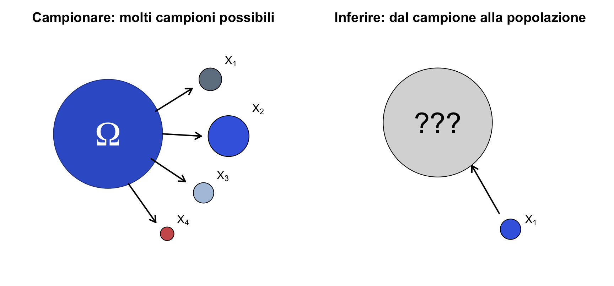
Vediamolo in R: due campioni dalla stessa popolazione danno medie diverse, e ripetendo l’estrazione mille volte otteniamo la distribuzione campionaria della media:
mean(rnorm(30, mean =100, sd =15));mean(rnorm(30, mean =100, sd =15))
[1] 98.48759
[1] 102.5297
medie =replicate(n =1000, mean(rnorm(30, mean =100, sd =15)))hist(medie, main ="Distribuzione campionaria della media")
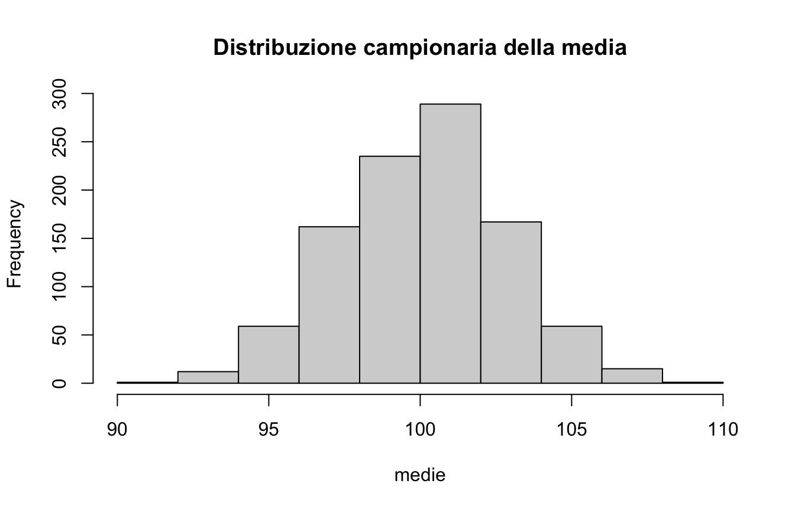
Ogni campione dà una statistica un po’ diversa: questa variabilità da campione a campione è esattamente l’incertezza che l’inferenza deve quantificare.
sd(medie)
[1] 2.750793
I due approcci principali per farlo sono quello frequentista e quello bayesiano. Prima di introdurre il secondo, ripassiamo brevemente il primo.
1.2 Un problema concreto
Vogliamo stimare la proporzione di studenti dei corsi della Scuola di Psicologia a cui piace la statistica.
Usiamo i dati di un questionario rilevato all’inizio di un corso di Analisi dei Dati (prof. Pastore): su \(n = 315\) rispondenti, a 75 la statistica piace.
La proporzione campionaria è circa 0.24 (il 24%). Ma questa è una statistica: che cosa possiamo dire del parametro, cioè della proporzione \(\pi\) nella popolazione di tutti gli studenti?
si definisce un’ipotesi nulla, ad esempio: la proporzione di studenti a cui piace la statistica è uguale a quella a cui non piace, \[H_0: \pi = 0.5\] e un’ipotesi alternativa, ad esempio \(H_1: \pi < 0.5\);
si calcola una statistica test sui dati osservati;
conoscendo la distribuzione campionaria della statistica test sotto\(H_0\), si calcola la probabilità di osservare un risultato uguale o più estremo di quello ottenuto: il p-value;
se il p-value è inferiore a una soglia prefissata (\(\alpha = 0.05\)), si rigetta \(H_0\); altrimenti no.
Vediamolo sui nostri dati. Se \(H_0\) fosse vera, il numero di studenti a cui piace la statistica in un campione di 315 seguirebbe una distribuzione binomiale con \(\pi = 0.5\):
S <-0:315# spazio campionario# probabilita di ciascun risultato sotto H0P <-dbinom(S, 315, prob =0.5) plot(S, P, type ="h",xlab ="Numero di studenti a cui piace, su 315",ylab =expression(f(x~"|"~H[0])))points(75, 0, pch =19, col ="red")
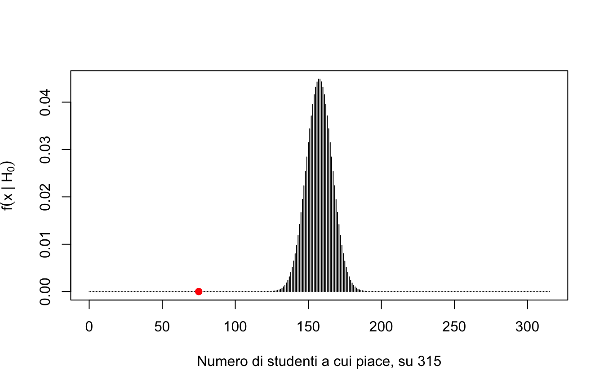
Il punto rosso è il risultato osservato: 75. La probabilità di osservare 75 o meno successi, se \(H_0\) fosse vera, è
pbinom(75, 315, prob =0.5)
[1] 1.397657e-21
un numero microscopico.
1.4 Bayes vs. NHST
I risultati dell’approccio NHST rispondono alla domanda:
Assumendo che \(H_0\) sia vera, qual è la probabilità di osservare valori uguali o più estremi rispetto a quelli rilevati?
In realtà, la domanda che ci interessa davvero è un’altra:
Dati i valori osservati, qual è la probabilità che la mia ipotesi sia vera?
Non è la stessa cosa. Nel primo caso stiamo calcolando \(P(R\,|\,H_0)\), la probabilità del risultato condizionata all’ipotesi; nel secondo \(P(H_0\,|\,R)\), la probabilità dell’ipotesi condizionata al risultato (una probabilità a posteriori). E in generale
\[
P(R\,|\,H_0) \neq P(H_0\,|\,R)
\]
Il legame tra le due probabilità è definito dal teorema di Bayes:
dove \(P(H_0)\) è la probabilità a priori di \(H_0\), cioè quanto era plausibile l’ipotesi prima di vedere il risultato.
1.5 Esempio schizofrenia
L’incidenza della schizofrenia negli adulti è circa del 2%. Supponiamo di avere un test diagnostico che individua il 95% dei soggetti realmente schizofrenici (sensibilità) e il 97% dei soggetti sani (specificità). Indichiamo:
\(H_0\): il soggetto è sano; \(H_1\): il soggetto è schizofrenico;
Qual’è la probabilità che il soggetto sia sano, dato il test positivo?
Notate che \(P(R\,|\,H_0) = 0.03 < 0.05\): in logica NHST, davanti a un test positivo rigetteremmo l’ipotesi che il soggetto sia sano. Applichiamo invece il teorema di Bayes:
Nonostante il \(P(R\,|\,H_0) = 0.03\), la probabilità che il soggetto sia sano, dato il test positivo, è del 61%! La differenza la fa la probabilità a priori: la schizofrenia è rara, quindi tra i positivi al test i falsi allarmi sono la maggioranza.
Il modo più intuitivo di vederlo è con le frequenze naturali: su 10000 persone, 200 sono schizofreniche e 9800 sane. Il test ne segnala positive \(200 \times 0.95 = 190\) tra le malate e \(9800 \times 0.03 = 294\) tra le sane. Tra i \(190 + 294 = 484\) positivi, i sani sono \(294/484 \approx 0.61\).
I positivi al test sono le due caselle “test +”: \(190 + 294 = 484\), di cui 294 sani. La proporzione di positivi che non sono malati è \(294/484 \approx 0.61\).
✏️ Esercizio 1 — Il teorema di Bayes in ambulatorio
Lo stesso test viene ora usato in un ambulatorio specialistico, dove la prevalenza della schizofrenia tra chi arriva è del 20% (non del 2%).
Ricalcolate \(P(H_0\,|\,R)\) con il teorema di Bayes.
Verificate il risultato con le frequenze naturali (partite da 10000 persone).
Che cosa concludete sul ruolo della probabilità a priori?
\(P(H_0\,|\,R) \approx 0.11\): ora un test positivo indica malattia con probabilità circa 0.89.
Su 10000 persone: 2000 malate, 8000 sane. Positivi: \(2000 \times 0.95 = 1900\) malati e \(8000 \times 0.03 = 240\) sani. Tra i 2140 positivi, i sani sono \(240/2140 \approx 0.11\).
Lo stesso risultato (test positivo, stessa sensibilità e specificità) porta a conclusioni molto diverse a seconda di quanto era plausibile l’ipotesi prima di raccogliere il dato.
1.6 L’approccio Bayesiano
La differenza fondamentale tra i due approcci sta nel modo di trattare i parametri incogniti:
nell’approccio frequentista i parametri sono quantità fisse: \(\pi\) ha un valore vero (ignoto), e non ha senso parlare della sua probabilità. Per questo il p-value può solo condizionarsi a un valore ipotizzato (\(H_0: \pi = 0.5\));
nell’approccio bayesiano i parametri sono trattati come variabili casuali, con una distribuzione di probabilità che descrive la nostra incertezza. Diventa quindi legittimo (e naturale) calcolare quantità come \(P(\pi < 0.5\,|\,\text{dati})\) o \(P(0.2 < \pi < 0.3\,|\,\text{dati})\).
Il meccanismo è sempre il teorema di Bayes, applicato però al parametro:
la prior\(p(\theta)\) formalizza ciò che sappiamo (o crediamo) sul parametro prima di vedere i dati;
la likelihood\(p(D\,|\,\theta)\) dice quanto i dati osservati sono compatibili con ciascun valore del parametro;
la posterior\(p(\theta\,|\,D)\) è il risultato: ciò che sappiamo sul parametro dopo aver visto i dati.
L’inferenza bayesiana può essere vista come una riallocazione di credibilità tra i possibili valori del parametro: i valori consistenti con i dati guadagnano credibilità, quelli inconsistenti la perdono (Kruschke, 2015).
2 Ripasso di probabilità
2.1 Che cos’è la probabilità
In termini molto generali, la probabilità è una misura dell’incertezza associata al verificarsi di un evento. Dato un fenomeno aleatorio (es. il lancio di un dado), l’insieme di tutti i possibili esiti si chiama spazio campionario\(S\); un evento è un sottoinsieme di \(S\).
Per esempio nel lancio di un dado:
lo spazio campionario è ….
un possibile evento è ….
la probabilità che quest’evento si verifichi è …
Gli assiomi di Kolmogorov:
1. Una probabilità non può essere negativa;
2. La probabilità dell’intero spazio campionario è 1;
3. Per due eventi reciprocamente esclusivi, la probabilità che se ne verifichi uno o l’altro è la somma delle due probabilità.
2.2 Distribuzioni di probabilità
Una distribuzione di probabilità associa a ogni esito dello spazio campionario la sua probabilità. Se lo spazio campionario è discreto (esiti numerabili: es. numero di errori in un compito) si parla di funzione di massa di probabilità; se è continuo (es. un tempo di reazione) di funzione di densità.
Il tempo (in secondi) impiegato da una cavia per completare un labirinto è distribuito normalmente con media \(\mu = 180\) e deviazione standard \(\sigma = 40\).
Qual è la probabilità che una cavia impieghi meno di 200 secondi?
Qual è la probabilità che impieghi tra 140 e 220 secondi?
Rappresentate graficamente tre normali con media 180 e deviazione standard 20, 40 e 80 (suggerimento: curve() con add = TRUE).
Quale valore di tempo è superato solo dal 5% delle cavie?
Soluzione — Esercizio 2
pnorm(200, 180, 40)
[1] 0.6914625
pnorm(220, 180, 40) -pnorm(140, 180, 40)
[1] 0.6826895
curve(dnorm(x, 180, 20), from =180-4*80, to =180+4*80,ylab ="f(x)", xlab ="Tempo (secondi)")curve(dnorm(x, 180, 40), add =TRUE, col ="blue")curve(dnorm(x, 180, 80), add =TRUE, col ="red")legend("topleft", legend =c("sd = 20", "sd = 40", "sd = 80"),col =c("black", "blue", "red"), lty =1, bty ="n")
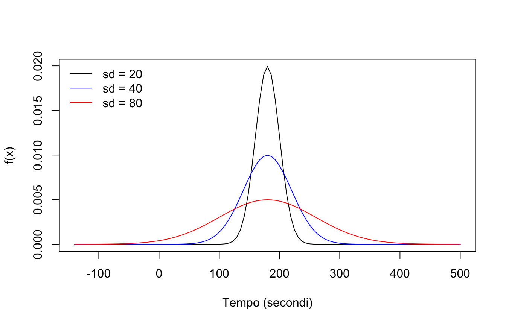
qnorm(0.95, 180, 40)
[1] 245.7941
\(P(X < 200) \approx 0.69\).
\(P(140 < X < 220) \approx 0.68\) (la classica regola “circa due terzi entro una deviazione standard”).
Al crescere di \(\sigma\) la curva si abbassa e si allarga: l’area totale resta 1.
Il 95° percentile è circa 246 secondi.
2.4 Probabilità congiunte, marginali e condizionate
Spesso ci interessa la probabilità del verificarsi insieme di due (o più) eventi. Costruiamo un esempio semplice: lanciamo una moneta equa tre volte.
Qual’è lo spazio campionario?
Lo spazio campionario ha 8 sequenze equiprobabili (TTT, TTC, TCT, …). Definiamo due variabili casuali:
\(X\) = numero di teste (0, 1, 2 o 3);
\(Y\) = numero di cambi testa/croce nella sequenza (0, 1 o 2). Ad esempio la sequenza TCT contiene 2 cambi, la sequenza TTT nessuno.
Elencando le 8 sequenze si ottiene la distribuzione congiunta\(Pr(X = x, Y = y)\):
\(X=0\)
\(X=1\)
\(X=2\)
\(X=3\)
totale
\(Y=0\)
1/8
0
0
1/8
2/8
\(Y=1\)
0
2/8
2/8
0
4/8
\(Y=2\)
0
1/8
1/8
0
2/8
totale
1/8
3/8
3/8
1/8
1
E se volessimo la probabilità di un valore di \(X\)da solo — per esempio \(Pr(X = 1)\), “esattamente una testa”, senza badare ai cambi? Guardando la colonna \(X = 1\) della tabella: una sequenza con una sola testa può avere 1 cambio oppure 2 cambi. Sono casi che si escludono a vicenda, quindi (terzo assioma di Kolmogorov) le loro probabilità si sommano:
\[
Pr(X = 1) =
\underbrace{Pr(X = 1, Y = 0)}_{0} +
\underbrace{Pr(X = 1, Y = 1)}_{2/8} +
\underbrace{Pr(X = 1, Y = 2)}_{1/8} = \frac{3}{8}
\]
che è esattamente il totale della colonna. Le distribuzioni ottenute così — i totali di riga e di colonna — si chiamano distribuzioni marginali: ciascuna descrive una variabile per conto suo, qualunque sia il valore dell’altra. In generale, per ottenere la marginale di \(X\) si somma la congiunta su tutti i valori di \(Y\) (si dice “marginalizzare rispetto a \(Y\)”):
\[
Pr(x) = \sum_y Pr(x, y)
\]
La probabilità condizionata risponde invece a domande del tipo: qual è la probabilità che la sequenza abbia 1 cambio, sapendo che ha 1 testa? Si calcola restringendo lo spazio ai soli casi compatibili con la condizione:
Due variabili si dicono indipendenti se e solo se \(Pr(y\,|\,x) = Pr(y)\) per ogni \(x\) e \(y\) o, equivalentemente, se la congiunta è il prodotto delle marginali: \(Pr(x, y) = Pr(x)\,Pr(y)\).
✏️ Esercizio 3 — Lancio di due dadi
Si consideri il lancio di due dadi equilibrati. Siano X e Y le variabili aleatorie che rappresentano rispettivamente il risultato del primo e del secondo dado.
Calcolare la probabilità congiunta che X = 3 e Y = 5.
Calcolare la probabilità che Y = 5 dato che X = 3.
Sono X e Y variabili indipendenti? Giustificare la risposta.
Soluzione — Esercizio 3
# Calcolare la probabilità congiunta che X = 3 e Y = 5.(1/6) * (1/6)
[1] 0.02777778
# Calcolare la probabilità che Y = 5 dato che X = 3.(1/6)
[1] 0.1666667
# X e Y sono indipendenti perché il risultato di un dado # non influenza il risultato dell'altro dado
2.5 Da dove viene il teorema di Bayes
Il teorema di Bayes è una conseguenza diretta della definizione di probabilità condizionata. Scriviamola nei due sensi:
curve(dnorm(x, 10, 1.5), from =5, to =15, lwd =2,xlab ="y", ylab ="f(y)", ylim =c(0, 0.3))d <-dnorm(y, 10, 1.5)segments(y, 0, y, d, col ="red", lty =2)points(y, rep(0, length(y)), pch =19)points(y, d, pch =19, col ="red")
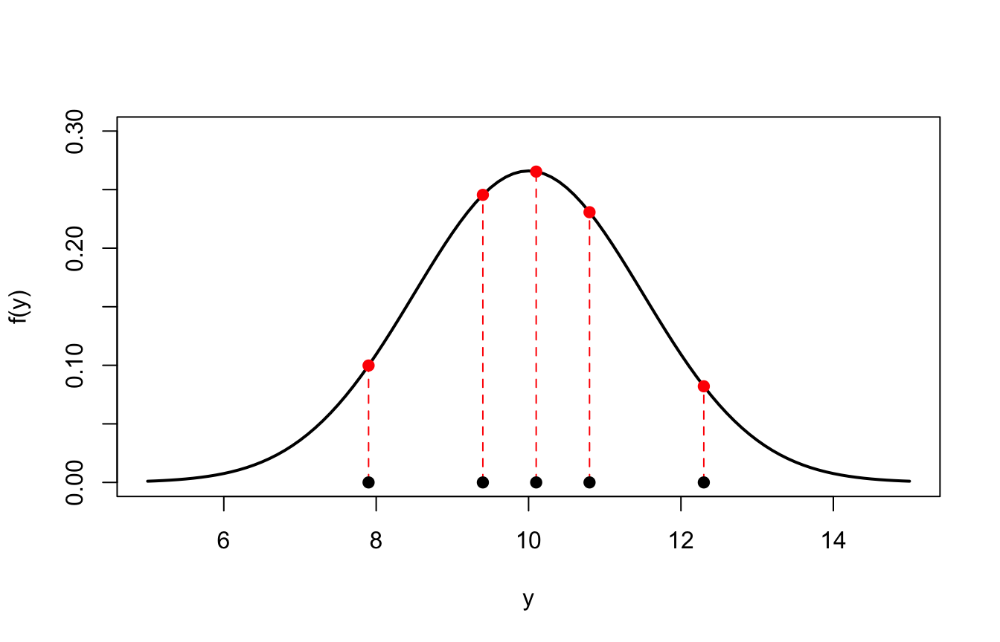
Le cinque densità dicono quanto ciascun punto è “plausibile” sotto la distribuzione ipotizzata. Ma il campione è uno solo: i punti sono stati osservati insieme, e la probabilità di eventi congiunti indipendenti — lo abbiamo appena ripassato — si ottiene moltiplicando:
Il prodotto di tante densità è un numero piccolissimo: per questo si lavora quasi sempre con la log-verosimiglianza, che trasforma il prodotto in una somma.
Il numero appena calcolato dipende dall’ipotesi fatta (\(\mu = 10\)). Ma potevamo ipotizzare qualunque altro valore: proviamoli tutti (con \(\sigma\) fissata, per semplicità). Quella che otteniamo è la funzione di verosimiglianza\(\mathcal{L}(\mu)\):
mu_griglia <-seq(7, 13, by =0.05)logL <-numeric(length(mu_griglia))for (i in1:length(mu_griglia)) { logL[i] <-sum(dnorm(y, mu_griglia[i], 1.5, log =TRUE))}plot(mu_griglia, logL, type ="l", lwd =2,xlab =expression(mu), ylab ="log-likelihood")abline(v =mean(y), lty =2, col ="red")
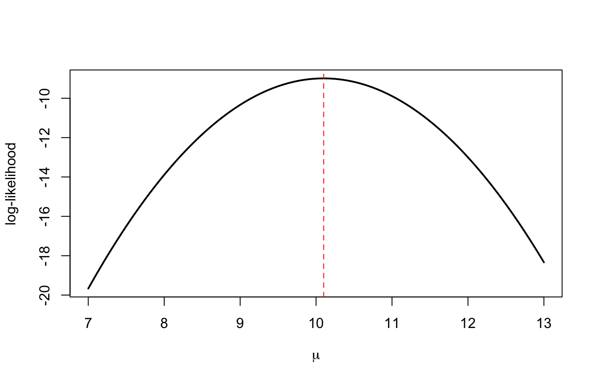
La curva ha un massimo, e il massimo cade esattamente sulla media campionaria (linea rossa): tra tutte le normali candidate, quella centrata su \(\bar{y}\) è la più compatibile con i dati. Questo è il principio della massima verosimiglianza (maximum likelihood).
✏️ Esercizio 4 — La verosimiglianza del sondaggio
Tornate ai dati della Sezione 1.2 (75 successi su 315).
Costruite una griglia di valori di \(\theta\) da 0 a 1 (by = 0.001) e calcolate la verosimiglianza binomiale di ciascun valore con dbinom(75, 315, prob = theta).
Rappresentatela graficamente.
Per quale valore di \(\theta\) la verosimiglianza è massima? Confrontatelo con la proporzione campionaria.
Soluzione — Esercizio 4
theta <-seq(0, 1, by =0.001)L <-dbinom(75, 315, prob = theta)plot(theta, L, type ="l", lwd =2,xlab =expression(theta), ylab ="Likelihood")abline(v = theta[which.max(L)], lty =2, col ="red")
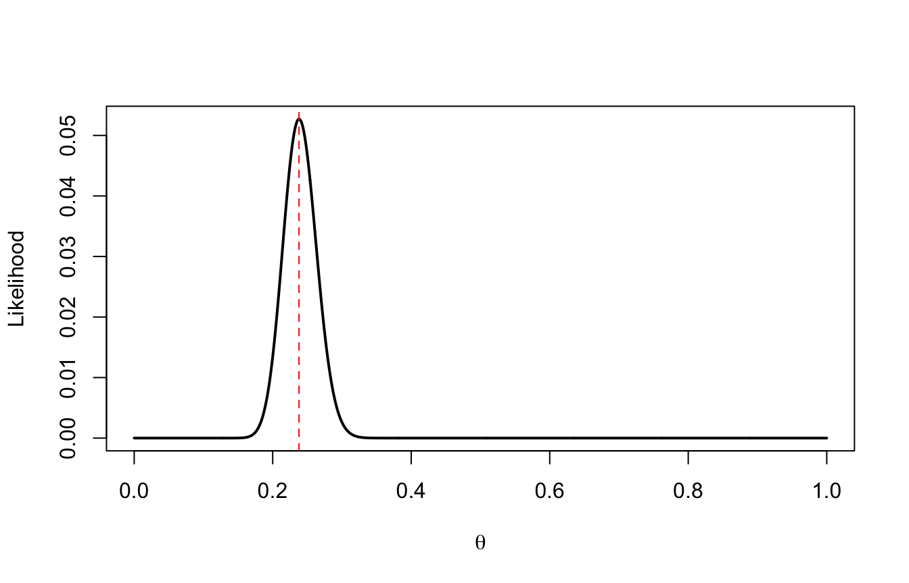
theta[which.max(L)]
[1] 0.238
75/315
[1] 0.2380952
Il massimo cade su \(\theta = 0.238\), esattamente la proporzione campionaria: la stima di massima verosimiglianza di una proporzione è la proporzione osservata. Notate anche che la curva è stretta: con \(n = 315\) i dati sono molto informativi e i valori di \(\theta\) lontani da 0.24 sono praticamente incompatibili con quanto osservato.
4 L’aggiornamento bayesiano: il caso binomiale
4.1 Un esempio con prior discreta
Un ornitologo vuole stimare la proporzione \(\theta\) di maschi in una popolazione di kiwi. Il modello delle osservazioni è una Bernoulli: ogni animale osservato è maschio con probabilità \(\theta\) e femmina con probabilità \(1 - \theta\), in modo indipendente dagli altri. Osservando \(N\) animali di cui \(z\) maschi, la verosimiglianza è
Per iniziare, supponiamo (irrealisticamente) che \(\theta\) possa assumere solo tre valori: 0.25, 0.5, 0.75. Le nostre credenze a priori: il valore più plausibile è 0.5 (probabilità 0.5), gli altri due si dividono il resto (0.25 ciascuno).
theta <-c(0.25, 0.50, 0.75) # valori possibili del parametroprior <-c(0.25, 0.50, 0.25) # probabilita a prioriplot(theta, prior, type ="h", lwd =4, xlim =c(0, 1), ylim =c(0, 1),xlab =expression(theta), ylab =expression(p(theta)), main ="Prior")
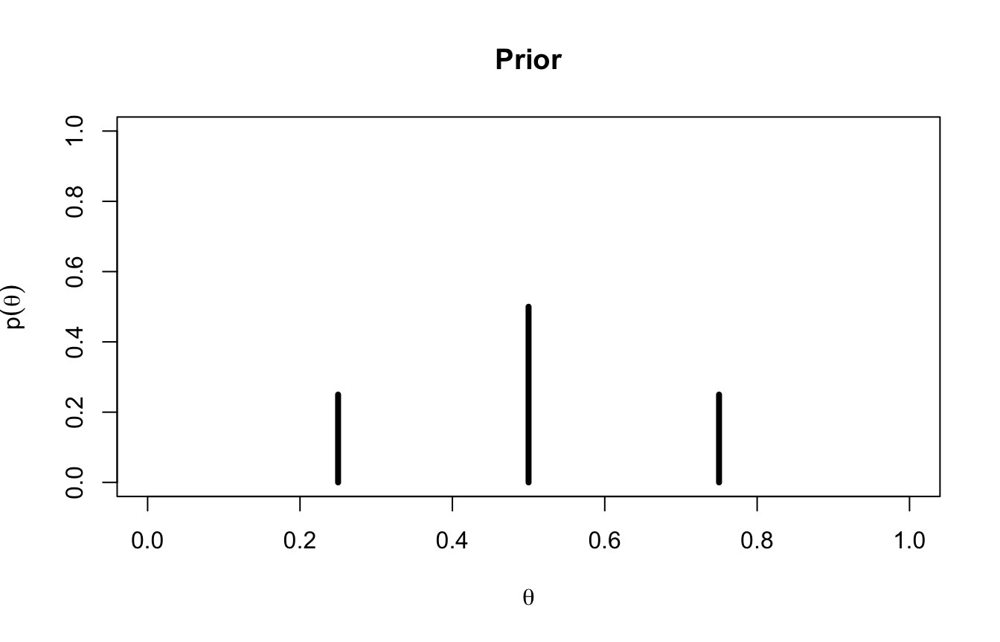
Osserviamo 9 animali: 2 maschi e 7 femmine. Calcoliamo la posterior seguendo esattamente il teorema di Bayes:
# dati: 2 maschi su 9 animaliz <-2; N <-9like <- theta^z * (1- theta)^(N - z) # verosimiglianza di ciascun thetapD <-sum(like * prior) # evidence: p(D) normalizzazionepost <- (like * prior) / pD # teorema di Bayes
Codice del grafico
par(mfrow =c(1, 3), mar =c(4, 4, 3, 1))plot(theta, prior, type ="h", lwd =4, xlim =c(0, 1), ylim =c(0, 1),xlab =expression(theta), ylab =expression(p(theta)), main ="Prior")plot(theta, like, type ="h", lwd =4, xlim =c(0, 1),xlab =expression(theta), ylab =expression(p(D~"|"~theta)),main ="Likelihood")plot(theta, post, type ="h", lwd =4, xlim =c(0, 1), ylim =c(0, 1),xlab =expression(theta), ylab =expression(p(theta~"|"~D)),main ="Posterior")
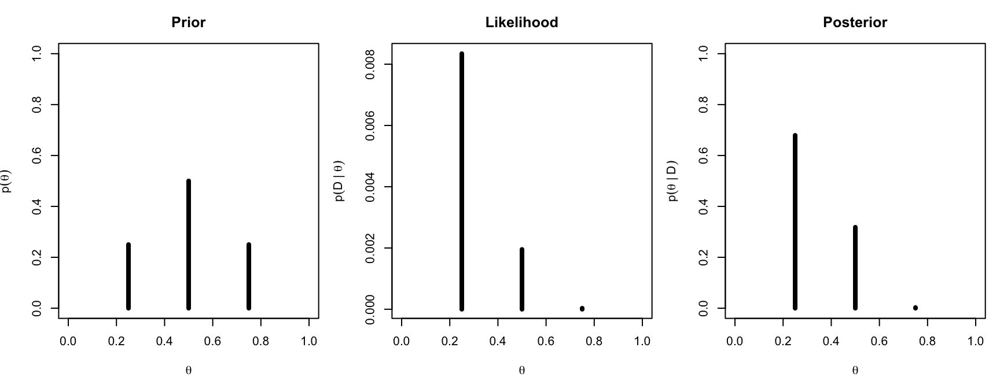
round(data.frame(theta, prior, like, post), 4)
theta prior like post
1 0.25 0.25 0.0083 0.6792
2 0.50 0.50 0.0020 0.3180
3 0.75 0.25 0.0000 0.0028
Leggiamo il risultato. A priori credevamo soprattutto in \(\theta = 0.5\); i dati (2 maschi su 9) sono molto più compatibili con \(\theta = 0.25\); la posterior rialloca la credibilità di conseguenza: \(\theta = 0.25\) passa da 0.25 a 0.68, \(\theta = 0.5\) scende da 0.50 a 0.32, e \(\theta = 0.75\) diventa praticamente impossibile.
Notate tre cose:
il denominatore \(p(D) = \sum_\theta p(D\,|\,\theta)\,p(\theta)\) serve solo a far sommare la posterior a 1: per questo spesso si scrive \(\text{posterior} \propto \text{prior} \times \text{likelihood}\);
la posterior è un compromesso tra prior e likelihood;
potremmo ora usare la posterior come nuova prior e raccogliere altri dati: l’aggiornamento bayesiano è intrinsecamente sequenziale.
✏️ Esercizio 5 — Il sondaggio con prior a griglia
Torniamo al sondaggio sulla statistica (75 su 315). Questa volta, invece della sola \(H_0: \pi = 0.5\), formalizziamo delle credenze a priori più articolate su 11 valori possibili di \(\theta\): \(0, 0.1, 0.2, \ldots, 1\). Immaginando di aver chiesto in aula, le probabilità a priori raccolte sono:
par(mfrow =c(1, 3), mar =c(4, 4, 3, 1))plot(theta, prior, type ="h", lwd =4, ylim =c(0, 1),xlab =expression(theta), ylab =expression(p(theta)), main ="Prior")plot(theta, like, type ="h", lwd =4,xlab =expression(theta), ylab =expression(p(D~"|"~theta)),main ="Likelihood")plot(theta, post, type ="h", lwd =4, ylim =c(0, 1),xlab =expression(theta), ylab =expression(p(theta~"|"~D)),main ="Posterior")
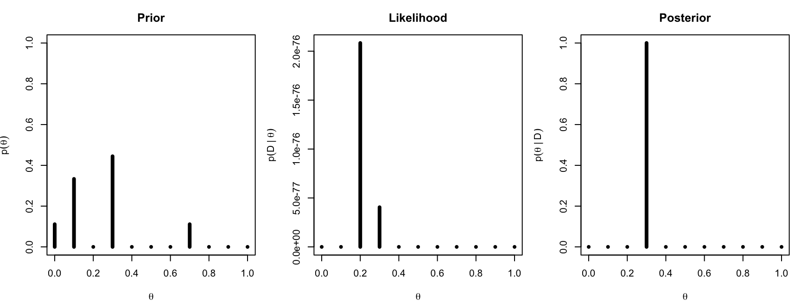
par(mfrow =c(1, 1))
Con \(n = 315\) la likelihood è estremamente concentrata attorno a 0.24 (lo abbiamo visto nell’Esercizio 4): tra gli 11 valori candidati, solo \(\theta = 0.3\) e (molto meno) \(\theta = 0.2\) hanno una verosimiglianza non trascurabile, e la prior assegnava a 0.3 il peso maggiore. La posterior si concentra quindi quasi tutta su 0.3: con molti dati, la likelihood domina la prior. Il limite qui è la griglia troppo povera: il valore “vero” (circa 0.24) non era nemmeno tra i candidati.
4.2 La distribuzione Beta
Una proporzione è una variabile continua in \([0, 1]\), quindi la scelta naturale è una distribuzione di probabilità continua su \([0, 1]\). La famiglia standard è la distribuzione Beta:
I due parametri \(a\) e \(b\) controllano forma e concentrazione. Un modo pratico di interpretarli: \(a - 1\) “successi immaginari” e \(b - 1\) “insuccessi immaginari” già osservati prima di iniziare; la media è \(a/(a+b)\).
\(\text{Beta}(1, 1)\) è la uniforme: massima incertezza, ogni proporzione è ugualmente plausibile a priori;
\(\text{Beta}(3, 3)\): crediamo blandamente che \(\theta\) sia vicino a 0.5;
\(\text{Beta}(10, 15)\): crediamo con una certa forza che \(\theta\) sia attorno a 0.4;
più \(a + b\) è grande, più la prior è informativa (concentrata).
4.3 La Beta-binomiale
Se
la prior è \(p(\theta) = \text{Beta}(a, b)\), e
i dati sono \(s\) successi e \(f\) insuccessi,
allora la posterior è ancora una Beta, con parametri aggiornati:
\[
p(\theta\,|\,D) = \text{Beta}(a + s,\; b + f)
\]
Basta sommare i successi osservati al primo parametro e gli insuccessi al secondo. Quando prior e posterior appartengono alla stessa famiglia si parla di prior coniugata: la Beta è la coniugata della verosimiglianza binomiale.
Immaginiamo di osservare un kiwi (animale) alla volta. La sequenza osservata dall’ornitologo era F, F, F, F, M, F, M, F, F: partendo dalla prior uniforme \(\text{Beta}(1, 1)\), dopo ogni osservazione la posterior \(\text{Beta}(1 + m,\, 1 + f)\) diventa la prior per l’osservazione successiva:
Codice del grafico
sequenza <-c(0, 0, 0, 0, 1, 0, 1, 0, 0) # 1 = maschio, 0 = femminam <-0; f <-0par(mfrow =c(3, 3), mar =c(2, 2, 2.5, 1))for (i in1:9) {if (sequenza[i] ==1) m <- m +1else f <- f +1curve(dbeta(x, 1+ m, 1+ f), from =0, to =1, lwd =2,xlab ="", ylab ="",main =paste0("oss. ", i, ": ", ifelse(sequenza[i] ==1, "M", "F")," (m=", m, ", f=", f, ")"))}
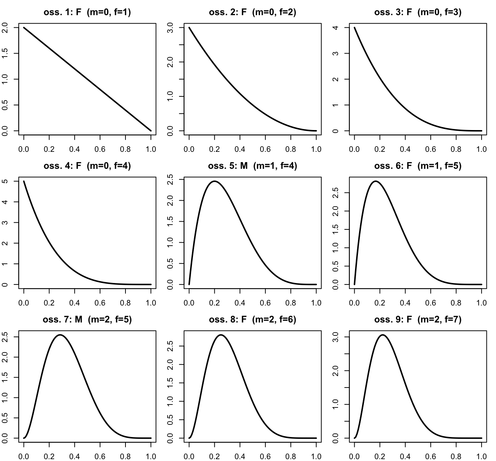
Ogni femmina sposta la distribuzione verso sinistra. Il risultato dopo 9 osservazioni è \(\text{Beta}(3, 8)\) — esattamente quello che si ottiene aggiornando in un colpo solo con \(s = 2\) e \(f = 7\): nell’aggiornamento bayesiano l’ordine delle osservazioni non conta, e la posterior di oggi è la prior di domani.
4.4 Riassumere la posterior
La posterior è il risultato dell’analisi bayesiana: una distribuzione completa, non un singolo numero. Il nostro compito è riassumerla in modo utile. Le sintesi principali sono di tre tipi.
1. Stime puntuali. Per la \(\text{Beta}(3, 8)\) dei kiwi:
a <-3; b <-8c(map = (a -1) / (a + b -2), # moda (maximum a posteriori)mediana =qbeta(0.5, a, b),media = a / (a + b))
map mediana media
0.2222222 0.2585747 0.2727273
MAP (il valore più probabile), mediana e media. Se la distribuzione è asimmetrica — come qui — le tre misure differiscono; con distribuzioni simmetriche coincidono.
2. Intervalli. Un intervallo di credibilità (credible interval) al 90% è un intervallo che contiene il parametro con probabilità 0.9, dato ciò che abbiamo osservato. Il modo più semplice è usare i quantili della posterior:
qbeta(c(0.05, 0.95), 3, 8) # intervallo quantile-based al 90%
[1] 0.08726443 0.50690130
Un’alternativa è l’intervallo HPD (Highest Posterior Density, o HPDI): il più stretto intervallo che contiene il 90% di probabilità. Con distribuzioni asimmetriche i due non coincidono:
curve(dbeta(x, 3, 8))abline(v =hdi(campioni_post, credMass =0.90), col ="green")abline(v =qbeta(c(0.05, 0.95), 3, 8), col ="red")
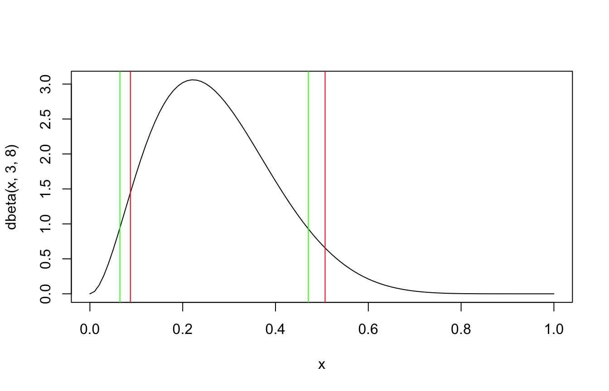
3. Probabilità di ipotesi. Qualunque affermazione su \(\theta\) ha ora una probabilità, calcolabile come area sotto la posterior. La proporzione di maschi è inferiore a 0.5?
pbeta(0.5, 3, 8) # Pr(theta < 0.5 | D)
[1] 0.9453125
1-pbeta(0.5, 3, 8) # Pr(theta > 0.5 | D)
[1] 0.0546875
Importante
Confrontate con l’intervallo di confidenza frequentista: “se ripetessimo il campionamento infinite volte, il 95% degli intervalli così costruiti conterrebbe il valore vero”. Sul singolo intervallo calcolato non è ammessa alcuna affermazione probabilistica: il parametro ci sta dentro oppure no. L’intervallo di credibilità dice invece esattamente ciò che tutti vorrebbero dire: “il parametro sta qui dentro con probabilità 0.95, dati i dati”.
4.5 Quanto conta la prior?
La posterior è un compromesso tra prior e dati. Vediamo come cambia il compromesso al variare dei due. Prima: stessi dati (2 su 9), prior sempre più informative (attorno a 0.50):
Codice
prior_a <-c(1, 10, 50) # tre prior: Beta(1,1), Beta(10,10), Beta(50,50)prior_b <-c(1, 10, 50)par(mfrow =c(1, 3), mar =c(4, 4, 3, 1))for (i in1:3) { a <- prior_a[i]; b <- prior_b[i]curve(dbeta(x, a +2, b +7), from =0, to =1, lwd =2, col ="red",xlab =expression(theta), ylab ="densita di probabilita",main =paste0("Beta(", a, ", ", b, ") + dati"), ylim =c(0, 8))curve(dbeta(x, a, b), add =TRUE, lwd =2, lty =2)abline(v =0.2222222, col ="blue")legend("topright", bty ="n", lwd =2, lty =c(2, 1),col =c("black", "red"), legend =c("prior", "posterior"))}
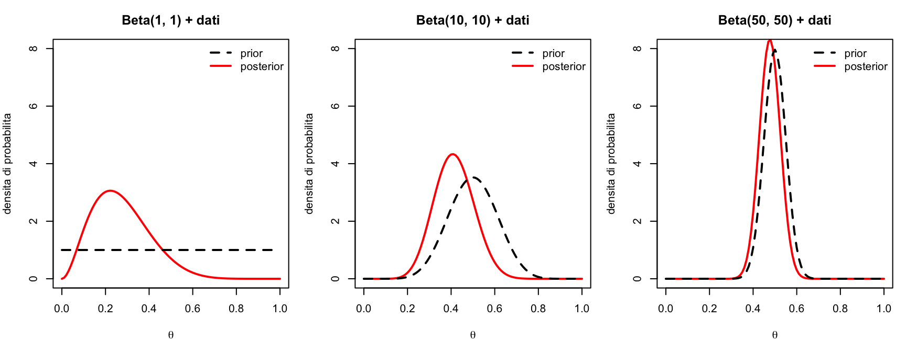
Con la prior uniforme la posterior segue i dati \(\text{Beta}(1,1)\); con \(\text{Beta}(50, 50)\) — che equivale a 98 osservazioni immaginarie bilanciate — 9 animali osservati spostano pochissimo.
Stessa prior \(\text{Beta}(10, 10)\), dati sempre più numerosi con la stessa proporzione osservata:
Codice
z <-c(2, 20, 200) # maschi osservatiN <-c(9, 90, 900) # animali osservatipar(mfrow =c(1, 3), mar =c(4, 4, 3, 1))for (i in1:3) {curve(dbeta(x, 10+ z[i], 10+ N[i] - z[i]), from =0, to =1, lwd =2,col ="red", xlab =expression(theta), ylab ="densita di probabilita",main =paste0(z[i], " maschi su ", N[i]))curve(dbeta(x, 10, 10), from =0, to =1, lwd =2,lty =2, add =TRUE,col ="black", xlab =expression(theta), ylab ="densita di probabilita")abline(v =0.2222222, col ="blue")}
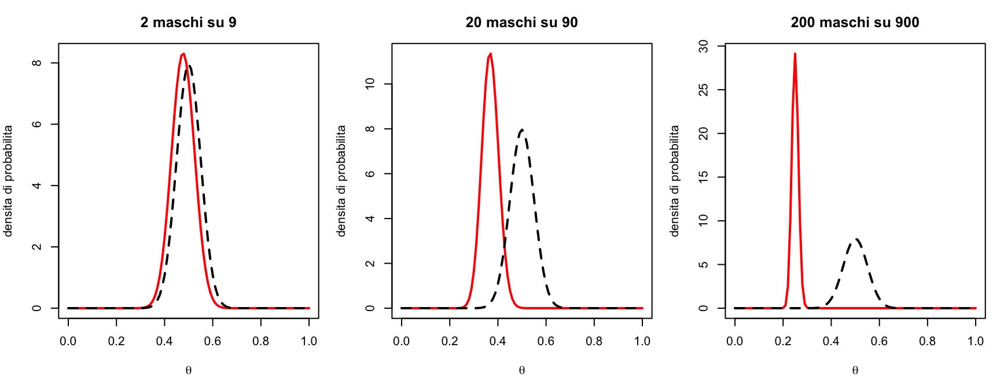
All’aumentare di \(n\) la posterior si stringe attorno alla proporzione osservata: con molti dati la likelihood domina, e la scelta della prior diventa sempre meno rilevante. Con pochi dati, viceversa, la prior conta molto — ci torneremo nella Sezione 9.
4.6 Prevedere nuovi dati: la distribuzione predittiva
Stimare i parametri non è l’unico obiettivo dell’inferenza: spesso vogliamo prevedere le prossime osservazioni. Un esempio classico (Hoff, 2009): a 129 donne di 65 anni o più viene chiesto se si sentono generalmente felici; 118 rispondono di sì. Con prior uniforme, la posterior è \(\text{Beta}(1 + 118,\; 1 + 11) = \text{Beta}(119, 12)\).
Qual è la probabilità che la prossima intervistata si dichiari felice? La risposta bayesiana media su tutta la posterior (abbiamo incertezza sul vero valore di \(\theta\)) e, nel modello binomiale, il risultato è proprio la media a posteriori:
#se la mia posterior è una beta(119,12)post <-rbeta(1e4, 119, 12)# la media ci dà la probabilità che la prox sia felicemean(post) # che si può ottenere analiticamente con
[1] 0.9086567
119/131
[1] 0.9083969
E se intervistassimo altre 20 donne, quante si dichiarerebbero felici? La risposta è un’intera distribuzione — la distribuzione predittiva a posteriori (posterior predictive distribution) — che possiamo ottenere per simulazione, propagando l’incertezza in due passi: estraggo un valore di \(\theta\) dalla posterior e, con quel \(\theta\), simulo un nuovo campione:
set.seed(9)theta_draw <-rbeta(100000, 119, 12) # incertezza su theta# nuovi dati simulatiz_nuove <-rbinom(100000, size =20, prob = theta_draw) plot(table(z_nuove) /100000, lwd =3,xlab ="Numero di donne felici su 20 nuove interviste",ylab ="Probabilita")
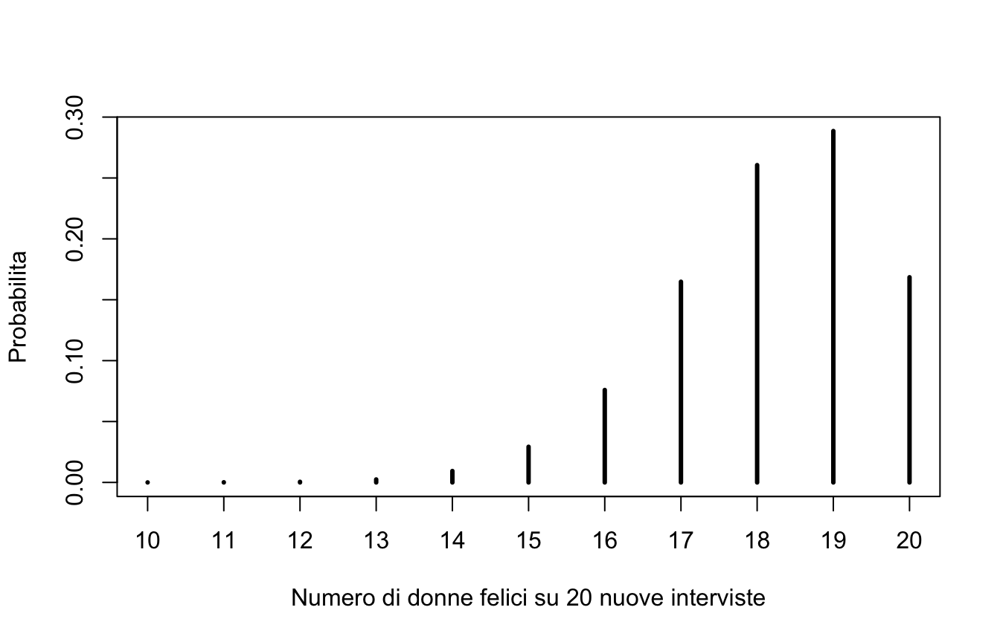
mean(z_nuove >=18) # Pr(almeno 18 su 20 | D)
[1] 0.71757
Nota
Questa è la logica del posterior predictive check che conosciamo già dai modelli lineari (check_predictions()) e che ritroveremo con pp_check(): simulare dati dalla distribuzione predittiva e confrontarli con quelli osservati. Se il modello è buono, i dati veri devono sembrare “uno dei tanti” dataset simulati.
✏️ Esercizio 6 — Il sondaggio
Riprendiamo il sondaggio della Sezione 1.2: 75 successi su 315, prior uniforme \(\text{Beta}(1, 1)\).
Scrivete la posterior di \(\theta\).
Calcolate media e mediana della posterior.
Calcolate l’intervallo di credibilità al 95% (quantile-based) e confrontatelo con l’intervallo di confidenza di binom.test(75, 315): sono simili? La loro interpretazione è la stessa?
Calcolate \(Pr(\theta \ge 0.5\,|\,D)\) e \(Pr(\theta < 0.3\,|\,D)\).
Soluzione — Esercizio 6
a <-1+75; b <-1+240c(media = a / (a + b),mediana =qbeta(0.5, a, b),map = (a -1) / (a + b -2))
media mediana map
0.2397476 0.2391998 0.2380952
qbeta(c(0.025, 0.975), a, b) # credible interval 95%
Media, mediana e MAP sono tutte attorno a 0.24: con \(n = 315\) la posterior è quasi simmetrica.
Numericamente quasi identici (con \(n\) grande e prior uniforme succede spesso), ma l’interpretazione è diversa: solo per l’intervallo di credibilità possiamo dire che \(\theta\) vi appartiene con probabilità 0.95.
Il problema di inferenza ora ha due parametri: la media \(\mu\) e la deviazione standard \(\sigma\).
\[
y_i \sim \mathcal{N}(\mu, \sigma)
\]
5.1 I dati: un sospetto deficit cognitivo
Abbiamo valutato le funzioni cognitive di 10 pazienti con un test standardizzato (nella popolazione generale: media 100, deviazione standard 15). C’è il sospetto di un deficit cognitivo. I punteggi osservati:
y <-c(73, 101, 74, 76, 112, 71, 71, 75, 97, 67)c(media =mean(y), sd =sd(y), n =length(y))
media sd n
81.70000 15.57098 10.00000
La domanda: che cosa possiamo dire di \(\mu\), la media della popolazione da cui provengono questi pazienti? In particolare: quanto è probabile che \(\mu < 90\)?
5.2 Caso 1: \(\sigma\) nota — la coniugazione normale-normale
Cominciamo dal caso semplice in cui assumiamo \(\sigma = 15\) nota (quella del test) e stimiamo solo \(\mu\). Il modello bayesiano completo:
La prior \(\mathcal{N}(100, 10)\) dice: prima di vedere i dati, il valore più plausibile per \(\mu\) è quello della popolazione generale (100), ma con incertezza sostanziale (deviazione standard 10).
prior normale + likelihood normale = posterior normale. Le formule di aggiornamento sono più leggibili in termini di precisione, cioè il reciproco della varianza (\(1/\tau^2\)): le precisioni si sommano,
Osservate la posizione della posterior: la media campionaria è 81.7, la prior era centrata su 100, la posterior si piazza a 85.1 circa — tra le due, ma molto più vicina ai dati, perché con \(n = 10\) la precisione dei dati (\(10/225 \approx 0.044\)) è oltre quattro volte quella della prior (\(0.01\)). Questo “tiro verso la prior” si chiama shrinkage: con pochi dati la stima viene regolarizzata verso ciò che è plausibile a priori, con molti dati sparisce.
Quanto è probabile che \(\mu < 90\)?
pnorm(90, mu1, tau1)
[1] 0.8754177
5.3 Caso 2: \(\mu\) e \(\sigma\) entrambi ignoti
Nel caso realistico anche \(\sigma\) è ignota. Il modello diventa:
La posterior ora è una distribuzione congiunta bidimensionale\(p(\mu, \sigma\,|\,D)\) e non ha una forma analitica comoda. Calcoliamo prior × likelihood su una griglia di coppie\((\mu, \sigma)\).
Le curve di livello mostrano la regione di coppie \((\mu, \sigma)\) credibili. Per ottenere le distribuzioni marginali dei singoli parametri basta sommare sull’altro (esattamente come nella tabella della Sezione 2.4):
Codice
post_mu <-rowSums(POST) # marginalizzo su sigmapost_sigma <-colSums(POST) # marginalizzo su mupar(mfrow =c(1, 2), mar =c(4, 4, 3, 1))plot(mu_griglia, post_mu, type ="l", lwd =2,xlab =expression(mu), ylab =expression(p(mu~"|"~D)))plot(sigma_griglia, post_sigma, type ="l", lwd =2,xlab =expression(sigma), ylab =expression(p(sigma~"|"~D)))
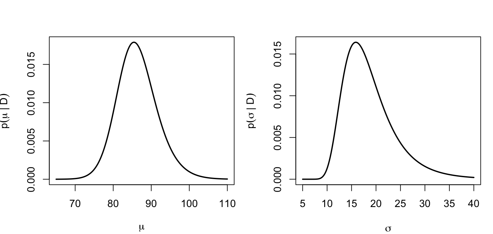
6 Campionare dalla posterior: MCMC
6.1 Perché campionare
Se non conosciamo la forma analitica di una distribuzione, possiamo approssimarla estraendo campioni da essa. Con abbastanza campioni, ricostruiamo la densità, la media dei campioni stima la media, i quantili stimano i quantili, e ogni probabilità diventa una semplice proporzione di campioni:
(La curva rossa è la \(\text{Beta}(12, 4)\), cioè la posterior dell’accuratezza di un soggetto con prior uniforme e 11 risposte corrette su 14 prove: con 100000 campioni l’istogramma la ricalca perfettamente.)
Qui abbiamo potuto usare rbeta() perché la posterior era nota. Il problema vero è: come si campiona da una posterior di cui conosciamo solo \(\text{prior} \times \text{likelihood}\), a meno di una costante? La risposta sono gli algoritmi MCMC (Markov Chain Monte Carlo): costruiscono una “catena” di valori che si muove nello spazio dei parametri e che, a regime, visita ogni regione con frequenza proporzionale alla sua probabilità a posteriori. I campioni MCMC hanno però una particolarità: ogni passo dipende dal precedente (per questo “catena”), quindi i campioni sono correlati tra loro — ne riparleremo tra poco a proposito di diagnostiche.
Immagine realizzata dal prof. Pastore
Lambert, B. (2018). A Student’s Guide to Bayesian Statistics. London, UK: SAGE;
6.2 I software
Storicamente: BUGS (anni ’90), poi JAGS, oggi soprattutto Stan — che prende il nome da Stanislaw Ulam, coinventore dei metodi Monte Carlo, e usa un algoritmo MCMC moderno ed efficiente (NUTS, No-U-Turn Sampler). In R ci sono diversi livelli di accesso a Stan:
rstan / cmdstanr: si scrive il modello direttamente nel linguaggio Stan (massima flessibilità);
rstanarm: modelli di regressione precompilati, sintassi identica a lm()/glm() — immediato;
brms: sintassi tipo lm(), genera e compila codice Stan su misura; il più flessibile tra quelli “a formula”.
In questa dispensa usiamo soprattutto rstanarm: la funzione stan_glm() è l’equivalente bayesiano di lm()/glm(), e non richiede di compilare nulla. A fine capitolo proveremo la stessa analisi con brms.
6.3 Un confronto tra due gruppi
16 adolescenti (8 maschi e 8 femmine) valutati sulla propensione al gioco d’azzardo (punteggi più alti = maggiore propensione). Ci chiediamo se ci sia una differenza di genere.
L’approccio NHST è il test \(t\) (che, come sappiamo dalla dispensa sui modelli lineari, è un modello lineare con un predittore dicotomico):
t.test(Ym, Yf, alternative ="greater", var.equal =TRUE)
Two Sample t-test
data: Ym and Yf
t = 1.7712, df = 14, p-value = 0.04914
alternative hypothesis: true difference in means is greater than 0
95 percent confidence interval:
0.01800657 Inf
sample estimates:
mean of x mean of y
11.4125 8.1875
\(p = 0.049\): “significativo” per un soffio. Tutto quello che possiamo dire è: rigettiamo \(H_0\) al 5%.
Versione bayesiana dello stesso modello lineare, con stan_glm():
library(rstanarm)fit_gioco <-stan_glm(punteggio ~ sesso, data = gioco, seed =1)
summary(fit_gioco, digits =2)
Model Info:
function: stan_glm
family: gaussian [identity]
formula: punteggio ~ sesso
algorithm: sampling
sample: 4000 (posterior sample size)
priors: see help('prior_summary')
observations: 16
predictors: 2
Estimates:
mean sd 10% 50% 90%
(Intercept) 8.17 1.40 6.37 8.18 9.92
sessom 3.24 1.98 0.71 3.27 5.73
sigma 3.84 0.76 2.97 3.71 4.87
Fit Diagnostics:
mean sd 10% 50% 90%
mean_PPD 9.78 1.39 8.02 9.81 11.51
The mean_ppd is the sample average posterior predictive distribution of the outcome variable (for details see help('summary.stanreg')).
MCMC diagnostics
mcse Rhat n_eff
(Intercept) 0.03 1.00 3061
sessom 0.04 1.00 2858
sigma 0.01 1.00 2694
mean_PPD 0.02 1.00 3496
log-posterior 0.03 1.00 1652
For each parameter, mcse is Monte Carlo standard error, n_eff is a crude measure of effective sample size, and Rhat is the potential scale reduction factor on split chains (at convergence Rhat=1).
La sintassi è identica a lm(); dietro le quinte, Stan ha campionato dalla posterior congiunta di tutti i parametri: intercetta (la media delle femmine), coefficiente sessom (la differenza maschi − femmine, chiamiamola \(\delta\)) e sigma. Di default vengono lanciate 4 catene da 2000 iterazioni, di cui le prime 1000 di riscaldamento (warmup) vengono scartate: restano \(4 \times 1000 = 4000\) draws dalla posterior.
6.4 Le diagnostiche MCMC
Prima di interpretare i risultati dobbiamo chiederci: il campionamento ha funzionato? Le quantità da guardare (nel blocco MCMC diagnostics del summary):
Rhat: si lanciano più catene in parallelo, da punti di partenza diversi, e si confrontano. Se tutte hanno esplorato la stessa regione, \(\hat{R} \approx 1\) (idealmente \(\le 1.01\)): convergenza raggiunta. Se \(\hat{R} > 1\), i risultati non sono affidabili;
n_eff (effective sample size): i draws MCMC sono correlati, quindi 4000 draws non valgono 4000 campioni indipendenti — ne “valgono” n_eff. Più è alto, più le stime sono precise (indicativamente, almeno qualche centinaio);
il trace plot: l’evoluzione di ciascuna catena nel tempo. Se le catene si sovrappongono oscillando attorno allo stesso valore — il classico “bruco pelosetto” (fuzzy caterpillar) — è un buon segno:
library(bayesplot)mcmc_trace(fit_gioco, pars =c("sessom", "sigma"))
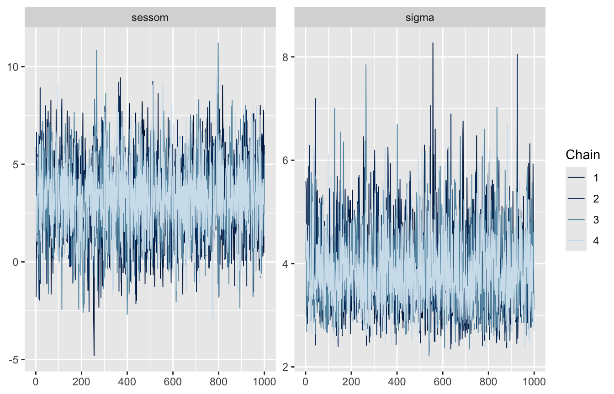
Qui è tutto in ordine: Rhat = 1, n_eff alti, catene ben mescolate.
6.5 Usare la posterior
Estraiamo le draws e trattiamoli per quello che sono: 4000 valori plausibili di ciascun parametro, con frequenza proporzionale alla loro credibilità a posteriori.
POST <-as.data.frame(fit_gioco)head(round(POST, 2))
Confrontate con l’output del test \(t\): là un p-value e una decisione binaria; qui la probabilità che la differenza sia positiva (circa 0.95), che superi 2 punti (circa 0.74), che stia in qualunque intervallo ci interessi. Con un metodo bayesiano possiamo calcolare \(Pr(\delta > 0\,|\,D)\); con NHST questa probabilità non esiste: \(H_1\) è vera oppure falsa, punto.
✏️ Esercizio 8 — Interrogare la posterior
Sempre sul modello fit_gioco:
calcolate l’intervallo di credibilità HPD al 89% per \(\delta\) con hdi() (pacchetto HDInterval) applicato a POST$sessom;
calcolate \(Pr(\delta > 5\,|\,D)\): una differenza di almeno 5 punti è credibile?
calcolate la probabilità che la deviazione standard residua sia maggiore di 4;
confrontate posterior_interval(fit_gioco, prob = 0.89) con il risultato di (a): perché non coincidono esattamente?
L’HPD al 89% va da circa 0.1 a circa 6.4: la differenza è credibilmente positiva ma la sua entità è stimata con molta incertezza (\(n = 16\)!).
\(Pr(\delta > 5\,|\,D) \approx 0.18\): possibile ma poco probabile.
Circa 0.36: anche su \(\sigma\) abbiamo un’intera distribuzione, non un numero.
posterior_interval() usa i quantili centrali (5.5% e 94.5%), non l’HPD: con posterior leggermente asimmetriche i due intervalli differiscono un po’. Con distribuzioni simmetriche coincidono.
6.6 La stessa analisi con brms
Prima di passare alle applicazioni, rifacciamo lo stesso modello con brms. A differenza di rstanarm, brms genera e compila codice Stan su misura.
L’argomento file salva il modello compilato e stimato in un file .rds (qui in una cartella objects): alle esecuzioni successive brms lo ricarica invece di ricompilare; con file_refit = "on_change" ristima solo se modello, dati o prior sono cambiati.
summary(fit_gioco_brm)
Family: gaussian
Links: mu = identity; sigma = identity
Formula: punteggio ~ sesso
Data: gioco (Number of observations: 16)
Draws: 4 chains, each with iter = 2000; warmup = 1000; thin = 1;
total post-warmup draws = 4000
Regression Coefficients:
Estimate Est.Error l-95% CI u-95% CI Rhat Bulk_ESS Tail_ESS
Intercept 8.04 1.33 5.45 10.69 1.00 2628 2165
sessom 3.18 1.93 -0.63 7.07 1.00 2633 2659
Further Distributional Parameters:
Estimate Est.Error l-95% CI u-95% CI Rhat Bulk_ESS Tail_ESS
sigma 3.74 0.70 2.64 5.33 1.00 2745 2266
Draws were sampled using sampling(NUTS). For each parameter, Bulk_ESS
and Tail_ESS are effective sample size measures, and Rhat is the potential
scale reduction factor on split chains (at convergence, Rhat = 1).
Ritroviamo tutte le quantità note: stime (Estimate), intervalli di credibilità (l-95% CI, u-95% CI), Rhat e le due versioni dell’ESS. In più, per interrogare la posterior c’è la comoda funzione hypothesis():
hypothesis(fit_gioco_brm, "sessom > 0")
Hypothesis Tests for class b:
Hypothesis Estimate Est.Error CI.Lower CI.Upper Evid.Ratio Post.Prob Star
1 (sessom) > 0 3.18 1.93 0.01 6.36 19 0.95
---
'CI': 90%-CI for one-sided and 95%-CI for two-sided hypotheses.
'*': For one-sided hypotheses, the posterior probability exceeds 95%;
for two-sided hypotheses, the value tested against lies outside the 95%-CI.
Posterior probabilities of point hypotheses assume equal prior probabilities.
Post.Prob è la nostra \(Pr(\delta > 0\,|\,D)\), calcolata come proporzione di draws esattamente come l’abbiamo calcolata a mano; Evid.Ratio è il rapporto \(Pr/(1 - Pr)\), cioè gli odds a posteriori dell’ipotesi.
E le prior? A differenza di rstanarm — che le sceglie deboli e riscalate sui dati — con brms vanno controllate. get_prior() mostra le prior in uso (o quelle che verrebbero usate, se chiamata su formula e dati prima di stimare):
get_prior(fit_gioco_brm)
prior class coef group resp dpar nlpar lb ub
(flat) b
(flat) b sessom
student_t(3, 8.6, 2.5) Intercept
student_t(3, 0, 2.5) sigma 0
source
default
(vectorized)
default
default
Ogni riga è una prior; le colonne principali si leggono così:
prior → la distribuzione assegnata al parametro; (flat) = prior piatta (vedi sotto);
class → la categoria di parametro: b per i coefficienti dei predittori (le “pendenze”), Intercept per l’intercetta, sigma per la deviazione standard residua;
coef → il coefficiente specifico dentro la classe; se vuoto, la prior vale per tutti i coefficienti di quella classe;
lb, ub → lower/upper bound, i limiti del parametro (sigma ha lb = 0: giustamente, una deviazione standard non può essere negativa);
source → default (scelta da brms) oppure user (specificata da voi).
La prior (flat)
Una prior flat (piatta) assegna la stessa credibilità a qualunque valore del parametro, da \(-\infty\) a \(+\infty\). È detta impropria: non è una vera distribuzione di probabilità, perché l’area sotto la curva è infinita. In pratica equivale a dire “non ho alcuna informazione a priori”, lasciando che siano interamente i dati a determinare la stima. È il default di brms per la classe b. Funziona, ma una prior anche solo debolmente informativa è quasi sempre preferibile (Sezione 9) — e per il Bayes Factor le prior piatte sono proprio inammissibili (Sezione 8.1).
Ma che cos’è quella prior sull’intercetta?
Per rendere il campionamento più efficiente, brms centra internamente i predittori attorno alla loro media. Di conseguenza la prior su Intercept non riguarda il valore atteso della risposta quando i predittori valgono 0, ma quando sono al loro valore medio — per questo il default è una Student-t centrata sulla mediana della risposta. Il centraggio è solo interno: l’intercetta e i coefficienti che leggete nel summary() finale sono riportati sulla scala originale.
Le prior si impostano con set_prior(): lo vedremo tra poco, e il modo giusto di sceglierle e collaudarle è il tema della Sezione 9. Ultima differenza pratica da ricordare: in pp_check() l’argomento per il numero di simulazioni si chiama ndraws, non nreps.
7 Applicazioni
7.1 Il t-test ripensato: la ROPE
Uno psicologo valuta se una nuova tecnica di meditazione riduca lo stress: 60 soggetti, 30 di controllo e 30 in trattamento. Simuliamo dati con esattamente le statistiche dello studio (controllo: media 80.8, ds 10.05; trattamento: media 75.6, ds 14.76):
library(MASS)set.seed(1515)controllo <-as.vector(mvrnorm(30, mu =80.8, Sigma =10.05^2, empirical =FALSE))trattamento <-as.vector(mvrnorm(30, mu =75.6, Sigma =14.76^2, empirical =FALSE))meditazione <-data.frame(gruppo =rep(c("controllo", "trattamento"), each =30),stress =c(controllo, trattamento))
Il test \(t\) classico:
t.test(stress ~ gruppo, data = meditazione,alternative ="greater", var.equal =TRUE)
Two Sample t-test
data: stress by gruppo
t = 0.98462, df = 58, p-value = 0.1645
alternative hypothesis: true difference in means between group controllo and group trattamento is greater than 0
95 percent confidence interval:
-2.550206 Inf
sample estimates:
mean in group controllo mean in group trattamento
81.39569 77.74037
\(p \approx 0.06\): non significativo. Fine dell’analisi? In ottica bayesiana possiamo fare un ragionamento più fine. Supponiamo che il trattamento, per essere utile in pratica, debba produrre una riduzione di almeno 5 punti: differenze tra \(-5\) e 0 sono “sostanzialmente nulle”. L’intervallo \([-5, 0]\) è la nostra ROPE (Region Of Practical Equivalence; Kruschke, 2015).
Stimiamo il modello con una prior debolmente informativa e scettica sulla differenza (\(\delta \sim \mathcal{N}(0, 5)\): a priori, riduzioni e aumenti ugualmente plausibili, per lo più entro ±10 punti):
Invece di “non significativo”, la conclusione diventa: con probabilità circa 0.3 il trattamento produce una riduzione praticamente rilevante, con probabilità circa 0.6 una differenza trascurabile, e un peggioramento è poco credibile. Il quadro è onesto: i dati non bastano a decidere, e servono più osservazioni — che è un’informazione ben diversa da “rigettiamo/non rigettiamo”.
Nota
A differenza di NHST, il metodo bayesiano permette anche di accettare un’ipotesi di equivalenza: se la posterior finisse quasi tutta dentro la ROPE, concluderemmo che la differenza è praticamente nulla — cosa che un p-value alto non autorizza mai a dire.
7.2 Più di due gruppi: l’ANOVA bayesiana
Un esperimento sul ragionamento nei bambini (scala 0–15) con tre condizioni: controllo, rinforzo negativo, rinforzo positivo (\(n = 20\) per gruppo).
set.seed(8)controllo <-as.vector(mvrnorm(20, mu =5.9, Sigma =1.7^2, empirical =TRUE))negativo <-as.vector(mvrnorm(20, mu =7.0, Sigma =1.8^2, empirical =TRUE))positivo <-as.vector(mvrnorm(20, mu =9.3, Sigma =1.8^2, empirical =TRUE))rinforzo <-data.frame(condizione =factor(rep(c("controllo", "negativo", "positivo"), each =20)),punteggio =c(controllo, negativo, positivo))plot(punteggio ~ condizione, data = rinforzo,xlab ="Condizione", ylab ="Punteggio di ragionamento")
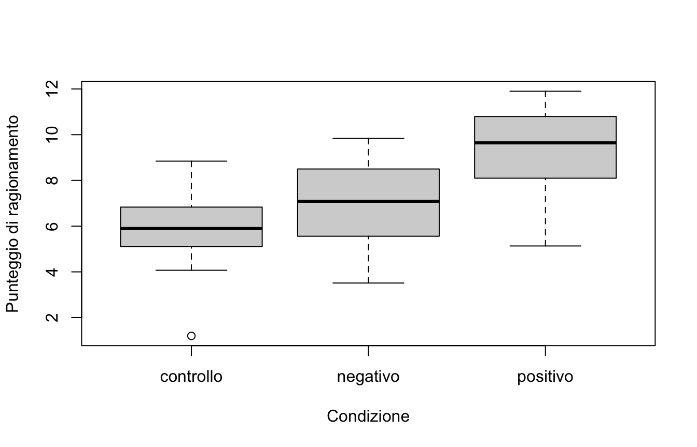
Stimiamo il modello nullo e il modello con la condizione sperimentale (le prior sui due coefficienti vanno passate come vettori, nell’ordine dei livelli):
Il posterior predictive check — l’equivalente bayesiano del check_predictions() che conosciamo — confronta i dati osservati con dataset simulati dal modello (qui usando, per ogni simulazione, un diverso draw dei parametri, incertezza inclusa):
pp_check(fit_rinf1, nreps =30)
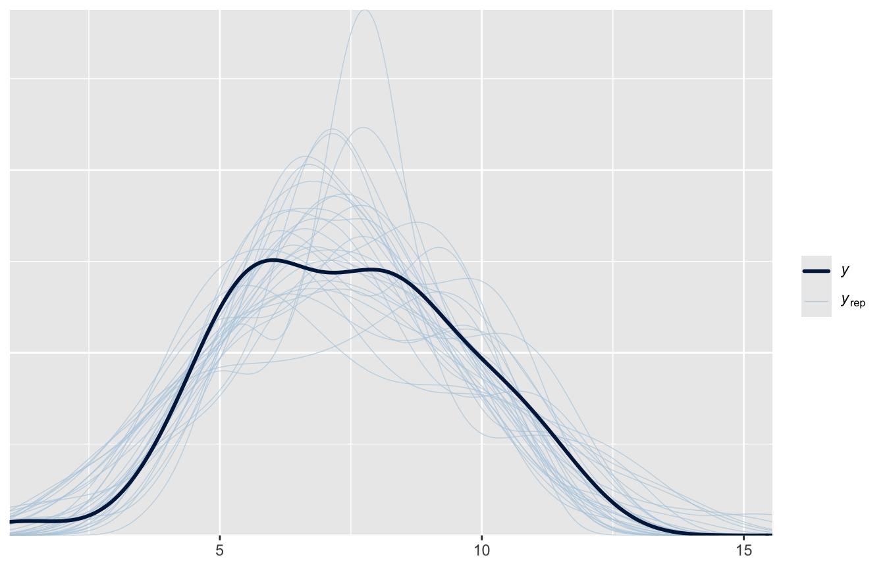
E la variabilità spiegata ha la sua versione bayesiana: non un numero, ma una distribuzione.
Confronto tra modelli. Nella dispensa sui modelli lineari abbiamo usato AIC e pesi di Akaike; l’analogo bayesiano moderno è la LOO cross-validation (leave-one-out, pacchetto loo), che stima la capacità predittiva del modello su dati nuovi (elpd, expected log predictive density):
Con \(n = 434\) e prior deboli (i default di rstanarm sono prior debolmente informative, riscalate sui dati: guardate prior_summary(fit_kidiq)), le stime sono molto vicine a quelle di lm() — come deve essere. Le piccole differenze sui coefficienti più grandi (intercetta e mom_hs1) sono il leggero shrinkage esercitato dalla prior. Quello che cambia davvero è ciò che possiamo dire:
POST <-as.data.frame(fit_kidiq)mean(POST$`mom_iq:mom_hs1`<0) # Pr(interazione < 0 | D)
[1] 0.9985
La probabilità che l’interazione sia negativa (cioè che l’effetto del QI della madre sia più debole tra le diplomate) è 0.999, praticamente certa: un’affermazione diretta, senza passare per “rigettiamo l’ipotesi che l’interazione sia zero”.
✏️ Esercizio 9 — La vostra prima regressione bayesiana
Stimate con stan_glm() il modello additivo kid_score ~ mom_iq + mom_hs.
Controllate le diagnostiche (Rhat, n_eff, trace plot): il campionamento ha funzionato?
Confrontate le stime con quelle di lm().
Calcolate l’intervallo di credibilità al 95% per il coefficiente di mom_hs1 e \(Pr(\beta_{hs} > 5\,|\,D)\): a parità di QI, quanto è credibile che il diploma della madre “valga” più di 5 punti?
Eseguite il posterior predictive check con pp_check().
posterior_interval(fit_add, prob =0.95, pars ="mom_hs1")
2.5% 97.5%
mom_hs1 1.629229 10.19254
POST <-as.data.frame(fit_add)mean(POST$mom_hs1 >5)
[1] 0.67225
pp_check(fit_add, nreps =30)
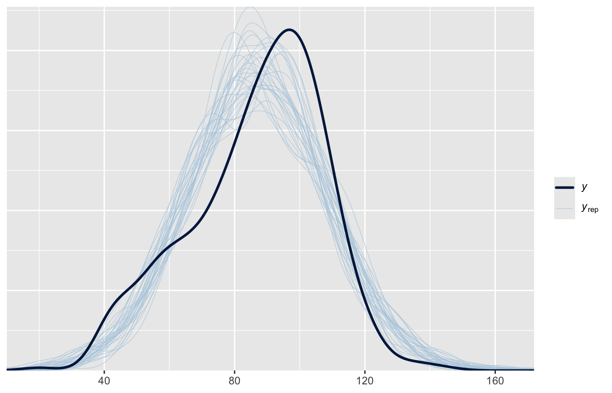
Rhat = 1 e n_eff nell’ordine delle migliaia: tutto bene.
Le stime sono praticamente identiche a lm() (\(n\) grande, prior deboli).
L’intervallo al 95% va da circa 1.6 a circa 10.2; \(Pr(\beta_{hs} > 5) \approx 0.67\): più probabile che no, ma tutt’altro che certo — l’intervallo è largo.
Le curve simulate seguono bene la distribuzione osservata, come per il modello frequentista della dispensa sui modelli lineari.
✏️ Esercizio 10 — Un’analisi completa
Tornate all’esperimento sul rinforzo (Sezione 7.2) e completate l’analisi:
dalla posterior di fit_rinf1, calcolate la distribuzione della differenza positivo − negativo (differenza tra i due coefficienti) e il suo intervallo di credibilità al 90%;
calcolate \(Pr(\mu_{pos} > \mu_{neg}\,|\,D)\);
definite una ROPE per questa differenza, ad esempio \([-1, 1]\) punti (“praticamente equivalenti”), e calcolate la probabilità che la differenza le sia esterna (a destra);
scrivete due righe di conclusioneche riportino stime, intervalli e probabilità.
Soluzione — Esercizio 10
POST <-as.data.frame(fit_rinf1)delta_pos_neg <- POST$condizionepositivo - POST$condizionenegativoplot(density(delta_pos_neg), lwd =2, main ="",xlab ="Differenza positivo - negativo", ylab ="densita di probabilita")abline(v =c(-1, 1), lty =3)
L’intervallo al 90% va da circa 1.4 a circa 3.2 punti.
Praticamente 1: che il rinforzo positivo superi quello negativo è pressoché certo, dati questi dati (e queste prior).
\(Pr(\delta > 1\,|\,D) \approx 0.99\): la differenza non solo è positiva, ma è credibilmente rilevante secondo la soglia che ci siamo dati.
Ad esempio: “il rinforzo positivo produce punteggi di ragionamento superiori al rinforzo negativo di 2.3 punti (mediana a posteriori; intervallo di credibilità al 90% [1.4; 3.2]); la probabilità che la differenza superi la soglia di rilevanza pratica di 1 punto è 0.99. Il modello con la condizione sperimentale mostra inoltre una capacità predittiva nettamente superiore al modello nullo (confronto LOO).”
8 Quantificare l’evidenza: il Bayes Factor
Finora abbiamo usato la posterior per fare affermazioni sui parametri (\(Pr(\delta > 0\,|\,D)\), intervalli, ROPE) e la LOO per confrontare la capacità predittiva dei modelli. C’è una terza domanda possibile: di quanto i dati spostano l’evidenza tra due ipotesi?
Il Bayes Factor (BF) è un rapporto di verosimiglianza (likelihood ratio): misura il supporto relativo che l’evidenza fornisce a due ipotesi in competizione, \(H_0\) e \(H_1\).
Il rapporto tra la probabilità a posteriori di \(H_0\) vs. \(H_1\), si ottiene moltiplicando prior odds delle ipotesi ed il Bayes Factor:
La logica del Bayes Factor (da Keysers, Gazzola & Wagenmakers, 2020). In alto: le distribuzioni dei valori di \(t\)previste da \(H_0\) (rosso) e da \(H_1\) (blu). Al centro: il BF è il rapporto tra le altezze delle due curve nel punto realmente osservato \(t_1\) — notate la differenza con il p-value, che è l’area oltre \(t_1\) sotto la sola \(H_0\) (in giallo nel primo pannello). In basso: la scala dell’evidenza.
Che cosa sono \(p(D\,|\,H_0)\) e \(p(D\,|\,H_1)\)? Se l’ipotesi fissa il parametro a un valore preciso (es. \(H_0: \theta = 0.5\)), è la solita verosimiglianza. Se invece l’ipotesi lascia il parametro libero con una prior (es. \(H_1: \theta \sim \text{Beta}(1, 1)\)), è la verosimiglianza marginale: la media della likelihood pesata con la prior,
Calcolare il BF può essere difficile in certe situazioni: l’integrale della verosimiglianza marginale raramente ha una forma chiusa. Vediamo i due strumenti principali.
8.1 Stimare il BF: il bridge sampling
Nel caso generale — un modello di regressione con i suoi coefficienti e la sua \(\sigma\) — la verosimiglianza marginale è un integrale su tutti i parametri e va stimata con metodi dedicati. Lo standard attuale è il bridge sampling (pacchetto bridgesampling; Gronau et al., 2020).
Con brms servono due accorgimenti: stimare i modelli con save_pars = save_pars(all = TRUE) (il bridge sampling ha bisogno di tutti i draws) e usare prior proprie su tutti i parametri — con le prior piatte di default sui coefficienti la verosimiglianza marginale non esiste nemmeno. Confrontiamo, per la meditazione (Sezione 7.1), il modello con il gruppo contro il modello nullo:
Estimated Bayes factor in favor of fit_med_h1 over fit_med_h0: 0.81800
\(BF_{10} \approx 1.3\): evidenza “aneddotica”, i dati della meditazione non spostano quasi nulla — coerente con l’analisi ROPE, che lasciava aperte tutte le possibilità (ma ora sappiamo anche quantificare quel “non sappiamo”). Per un caso particolare ma importantissimo — l’ipotesi puntuale annidata, come \(\delta = 0\) dentro il modello completo — esiste però una scorciatoia che non richiede di stimare nessun integrale.
8.2 Il rapporto di Savage-Dickey
Quando \(H_0\) è un caso particolare di \(H_1\) (un’ipotesi puntuale annidata: \(\theta = 0.5\) dentro “\(\theta\) libera”, oppure \(\delta = 0\) dentro “\(\delta \sim \mathcal{N}(0, 5)\)”), il BF si ottiene confrontando prior e posterior nel punto nullo:
L’intuizione: se i dati hanno allontanato la densità da \(\theta_0\) (posterior più bassa della prior in quel punto), sono evidenza contro \(H_0\); se l’hanno concentrata su \(\theta_0\), sono evidenza a favore.
Vediamolo sui kiwi: \(H_0: \theta = 0.5\) (popolazione bilanciata) contro \(H_1: \theta \sim \text{Beta}(1, 1)\). Prior e posterior sono note — \(\text{Beta}(1, 1)\) e \(\text{Beta}(3, 8)\) — quindi bastano due dbeta():
dbeta(0.5, 3, 8) /dbeta(0.5, 1, 1) # BF01
[1] 0.703125
\(BF_{01} = 0.70\), cioè \(BF_{10} \approx 1.4\): con 9 animali i dati non distinguono le due ipotesi (evidenza debole, guardate la scala).
E se avessimo osservato una perfetta parità, 45 maschi su 90? La posterior sarebbe \(\text{Beta}(46, 46)\), concentrata proprio sul punto nullo:
dbeta(0.5, 46, 46) /dbeta(0.5, 1, 1) # BF01
[1] 7.632272
\(BF_{01} \approx 7.6\): evidenza moderata a favore dell’ipotesi nulla.
Codice del grafico
par(mfrow =c(1, 2), mar =c(4, 4, 3, 1))# caso 1: 2 maschi su 9curve(dbeta(x, 3, 8), from =0, to =1, lwd =2, col ="red", ylim =c(0, 8),xlab =expression(theta), ylab ="densita di probabilita",main ="2 maschi su 9: BF01 = 0.70")curve(dbeta(x, 1, 1), add =TRUE, lwd =2, lty =2)points(c(0.5, 0.5), c(dbeta(0.5, 1, 1), dbeta(0.5, 3, 8)), pch =19)legend("topright", bty ="n", lwd =2, lty =c(2, 1), col =c("black", "red"),legend =c("prior", "posterior"))# caso 2: 45 maschi su 90curve(dbeta(x, 46, 46), from =0, to =1, lwd =2, col ="red", ylim =c(0, 8),xlab =expression(theta), ylab ="densita di probabilita",main ="45 maschi su 90: BF01 = 7.6")curve(dbeta(x, 1, 1), add =TRUE, lwd =2, lty =2)points(c(0.5, 0.5), c(dbeta(0.5, 1, 1), dbeta(0.5, 46, 46)), pch =19)
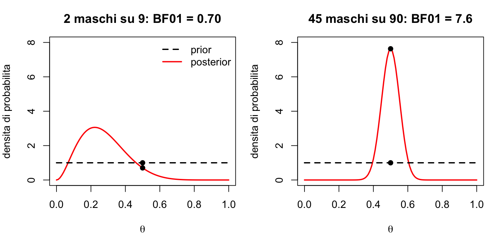
A sinistra i dati hanno abbassato la densità nel punto nullo (evidenza debole contro \(H_0\)), a destra l’hanno alzata di quasi 8 volte (evidenza a favore).
E per la meditazione? L’ipotesi \(\delta = 0\) è annidata nel modello con prior \(\mathcal{N}(0, 5)\): il Savage-Dickey stima lo stesso BF del bridge sampling — e brms lo calcola da solo con hypothesis(), come vedrete nell’Esercizio 11.
✏️ Esercizio 11 — Il Savage-Dickey con brms
Anche brms sa calcolare il Bayes Factor con il rapporto di Savage-Dickey. Tornate ai dati della meditazione (Sezione 7.1) e testate l’ipotesi puntuale \(\delta = 0\):
stimate il modello con brms, con prior \(\mathcal{N}(0, 5)\) sul coefficiente e l’argomento sample_prior = TRUE (per il Savage-Dickey servono anche i campioni dalla prior);
calcolate il BF con hypothesis(fit, "gruppotrattamento = 0"): per le ipotesi puntuali, Evid.Ratio è il \(BF_{01}\) di Savage-Dickey;
guardate plot(hypothesis(...)): che cosa mostra?
interpretate il risultato e confrontatelo con l’analisi ROPE della Sezione 7.1: le due conclusioni sono coerenti?
Soluzione — Esercizio 11
fit_med_brm <-brm(stress ~ gruppo, data = meditazione,prior =set_prior("normal(0, 5)", class ="b",coef ="gruppotrattamento"),sample_prior =TRUE, seed =1,file ="objects/fit_med_brm",file_refit ="on_change")
h <-hypothesis(fit_med_brm, "gruppotrattamento = 0")h
Hypothesis Tests for class b:
Hypothesis Estimate Est.Error CI.Lower CI.Upper Evid.Ratio
1 (gruppotrattamento) = 0 -2.36 2.96 -8.19 3.44 1.18
Post.Prob Star
1 0.54
---
'CI': 90%-CI for one-sided and 95%-CI for two-sided hypotheses.
'*': For one-sided hypotheses, the posterior probability exceeds 95%;
for two-sided hypotheses, the value tested against lies outside the 95%-CI.
Posterior probabilities of point hypotheses assume equal prior probabilities.
plot(h)
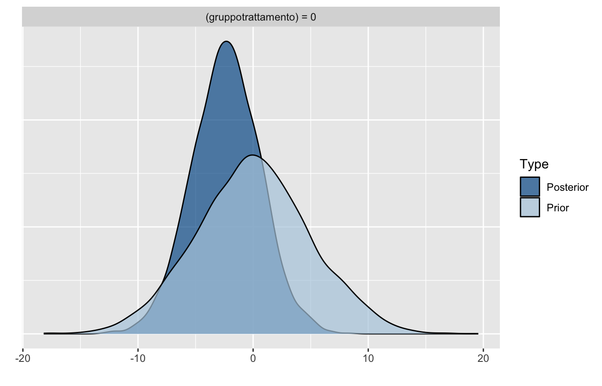
Evid.Ratio è poco sotto 1: i dati sono leggermente contro l’ipotesi nulla (\(BF_{10} = 1/BF_{01}\) poco sopra 1), ma siamo in piena zona “evidenza debole”: i dati non discriminano tra “nessun effetto” e “un effetto”.
Il grafico mostra prior e posterior di \(\delta\) sovrapposte: il Savage-Dickey è il rapporto tra le loro altezze nel punto \(\delta = 0\), ed è visibilmente vicino a 1.
È la stessa conclusione dell’analisi ROPE, vista dall’angolo del test: là dicevamo “i dati non bastano a decidere tra riduzione utile ed equivalenza”, qui “i dati non spostano l’evidenza tra \(H_0\) e \(H_1\)”. Con \(n = 60\) e un effetto piccolo, nessuno strumento può inventarsi l’informazione che non c’è — ma entrambi, a differenza del p-value, lo dicono esplicitamente. Notate infine che \(BF_{01} \approx 0.74\) equivale a \(BF_{10} \approx 1.35\): in accordo (a meno dell’errore di stima) con il bridge sampling della Sezione 8.1 — due stimatori della stessa quantità.
9 Scegliere le prior
Le prior sono la forza dell’approccio bayesiano — permettono di incorporare conoscenza, regolarizzano le stime, rendono possibili modelli complessi — ma vanno scelte con consapevolezza: una prior mal calibrata può produrre veri e propri errori inferenziali. Tre regole pratiche (adattate dalle raccomandazioni del team di Stan):
Debolmente informative è meglio di non informative. Una prior debolmente informativa esclude valori assurdi del parametro senza sbilanciare la stima (es. \(\mathcal{N}(0, 5)\) per una differenza che sulla scala della variabile non può ragionevolmente superare ±15). Le prior piatte “per prudenza” in realtà dicono che un coefficiente di 10 e uno di 10 milioni sono ugualmente plausibili: non è prudenza, è un’affermazione estrema.
Debolmente informative è meglio di troppo informative. Perdere un po’ di precisione con una prior un po’ troppo larga costa meno che escludere per errore regioni plausibili con una prior troppo stretta.
Con\(n\)piccolo, la prior va dichiarata e messa alla prova. Lo abbiamo visto nell’Esercizio 7: con 10 osservazioni, prior diverse producono conclusioni diverse. In questi casi si fa una sensitivity analysis: si ristima il modello con prior più e meno informative e si verifica quanto cambiano le conclusioni.
9.1 Il ruolo della scala: quanto è informativa una prior?
Ma che cosa vuol dire, in concreto, “debolmente informativa”? Una prior normale su un coefficiente ha due parametri: la media (dove crediamo stia il valore — quasi sempre 0, per scetticismo: nessuna direzione privilegiata) e la deviazione standard, che decide quanto lontano da zero siamo disposti a credere. La regola pratica è quella dei due sd: una \(\mathcal{N}(0, sd)\) dice che il coefficiente sta tra \(-2 \cdot sd\) e \(+2 \cdot sd\) con probabilità circa 0.98.
Torniamo alla differenza di stress tra trattamento e controllo della Sezione 7.1 (punteggi di stress attorno a 60–100). Tre prior candidate per \(\delta\):
\(\mathcal{N}(0, 1)\): differenza entro ±2 punti al 95% — prior fortemente scettica: esclude in partenza quasi ogni effetto interessante;
\(\mathcal{N}(0, 5)\): entro ±10 punti — debolmente informativa su questa scala: lascia spazio a ogni effetto realistico ed esclude solo gli assurdi (è quella che abbiamo usato nella Sezione 7.1);
\(\mathcal{N}(0, 50)\): entro ±100 punti — di fatto piatta sulla scala del problema.
Codice del grafico
curve(dnorm(x, 0, 1), from =-30, to =30, lwd =2,xlab =expression(delta), ylab =expression(p(delta)))curve(dnorm(x, 0, 5), add =TRUE, lwd =2, col ="blue")curve(dnorm(x, 0, 50), add =TRUE, lwd =2, col ="red")legend("topright", bty ="n", lwd =2, col =c("black", "blue", "red"),legend =c("Normal(0, 1)", "Normal(0, 5)", "Normal(0, 50)"))
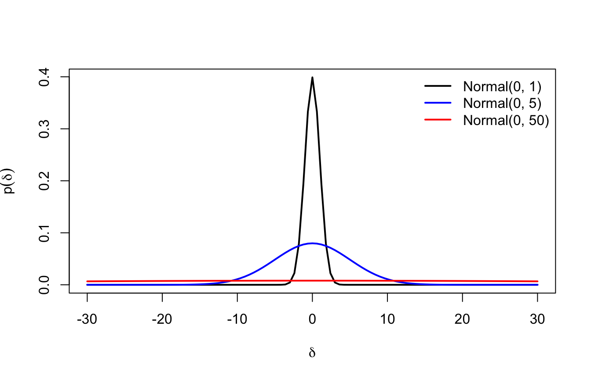
Per rendersi conto di che cosa “crede” ciascuna prior, basta calcolare quanta probabilità assegna a un effetto più grande di 10 punti (in una direzione o nell’altra):
Per la prior stretta un effetto oltre i 10 punti è praticamente impossibile; per quella debolmente informativa è raro ma contemplato (5%); per quella vaga è quasi l’aspettativa di default (84%).
9.2 La sensitivity analysis
Mettiamo alla prova le tre prior sull’esempio della meditazione, stimando tre volte lo stesso modello con brms. Ripassiamo la sintassi di set_prior(): si passa la distribuzione (come stringa) e si dice a che cosa si applica:
prior_stretta <-set_prior("normal(0, 1)", # la distribuzioneclass ="b", # classe: coefficienticoef ="gruppotrattamento") # quale coefficienteprior_media <-set_prior("normal(0, 5)", class ="b", coef ="gruppotrattamento")prior_vaga <-set_prior("normal(0, 50)", class ="b", coef ="gruppotrattamento")fit_med_stretta <-brm(stress ~ gruppo, data = meditazione,prior = prior_stretta, seed =1,file ="objects/fit_med_stretta",file_refit ="on_change")fit_med_media <-brm(stress ~ gruppo, data = meditazione,prior = prior_media, seed =1,file ="objects/fit_med_media",file_refit ="on_change")fit_med_vaga <-brm(stress ~ gruppo, data = meditazione,prior = prior_vaga, seed =1,file ="objects/fit_med_vaga",file_refit ="on_change")
Confrontiamo prior e posterior della differenza nei tre scenari (la linea punteggiata verticale è la differenza osservata nei dati, -3.6553226):
Estimate Est.Error Q2.5 Q97.5
stretta -0.2681217 0.9652494 -2.141901 1.648798
media -2.3531791 3.0074206 -8.071360 3.521712
vaga -3.6905588 3.7355269 -10.890718 3.590522
Con la prior strettissima \(\mathcal{N}(0, 1)\) vince la prior: la posterior le resta incollata e la stima viene schiacciata quasi a zero (\(n = 60\) non basta a farle “cambiare idea”).
9.3 Il prior predictive check
Le regole aiutano, ma come si fa a vedere se le prior scelte sono sensate? L’idea è la stessa della distribuzione predittiva (Sezione 4.6), con la prior al posto della posterior: simulare dati dal modello prima di avergli mostrato quelli veri.
Se il modello, con le nostre prior, genera dati assurdi, le prior vanno riviste. In brms basta l’argomento sample_prior = "only": il modello viene “stimato” ignorando completamente i dati.
Simuliamo uno studio (\(n = 70\)) in cui la depressione dipende da gruppo, età e ansia — e siccome i dati li generiamo noi, conosciamo i coefficienti veri:
Proviamo come prior \(\mathcal{N}(0, 1)\) su tutti i coefficienti.
prior_1 <-set_prior("normal(0, 1)", class ="b")fit_prior_1 <-brm(depressione ~ gruppo + eta + ansia, data = dat_dep,prior = prior_1, sample_prior ="only", seed =1,file ="objects/fit_prior_1", file_refit ="on_change")
pp_check(fit_prior_1, ndraws =100)
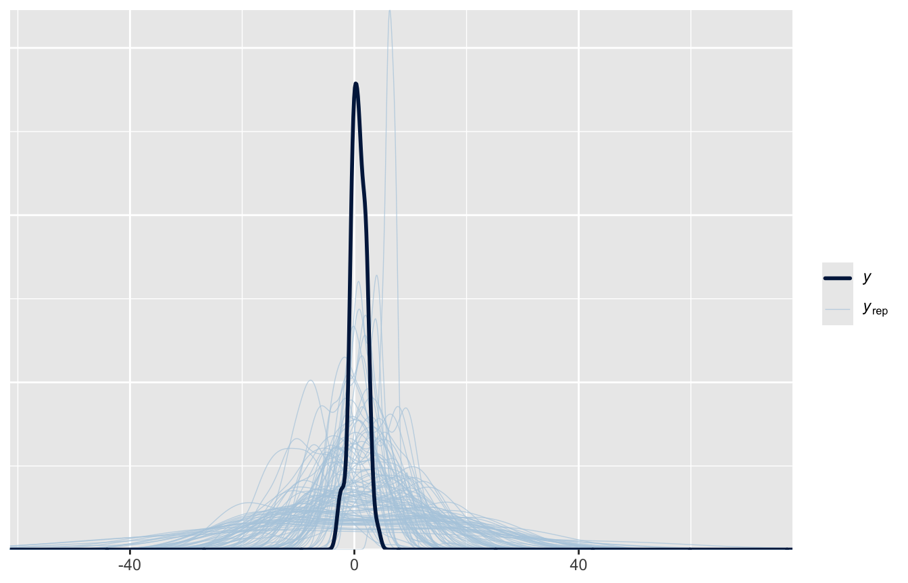
I dati veri (curva scura) stanno tra circa −2 e 5; il modello, prima di vederli, prevedeva tranquillamente valori di decine di punti. Riproviamo:
prior_2 <-c(set_prior("normal(0, 0.5)", class ="b", coef ="gruppog2"),set_prior("normal(0, 0.05)", class ="b", coef ="eta"),set_prior("normal(0, 0.5)", class ="b", coef ="ansia"),set_prior("normal(0, 2)", class ="sigma"))fit_prior_2 <-brm(depressione ~ gruppo + eta + ansia, data = dat_dep,prior = prior_2, sample_prior ="only", seed =1,file ="objects/fit_prior_2", file_refit ="on_change")
pp_check(fit_prior_2, ndraws =100)
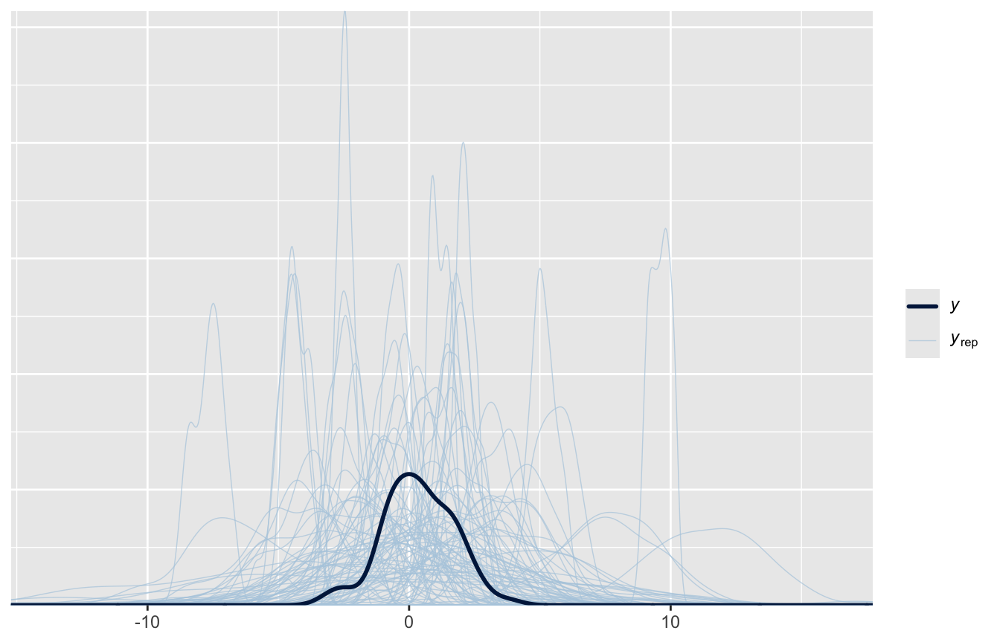
Ora le previsioni a priori coprono un range plausibile senza essere incollate ai dati: prior debolmente informative fatte bene. Possiamo stimare il modello vero e proprio con queste prior:
fit_dep <-brm(depressione ~ gruppo + eta + ansia, data = dat_dep,prior = prior_2, seed =1,file ="objects/fit_dep", file_refit ="on_change")
Con dati simulati possiamo fare un controllo impossibile con i dati veri: verificare che il modello recuperi i parametri usati per generare i dati. Se non ci riesce con i dati “puliti” di una simulazione, non c’è motivo di fidarsi di quello che dirà sui dati veri: è un collaudo standard quando si mette in piedi un modello nuovo.
veri <-c(0.3, 0.3, 0.01, 0.5, 1) # intercetta, gruppo, eta, ansia, sigmadraws <-data.frame(fit_dep)[, 1:5]colnames(draws)
I triangoli chiari sono i valori veri, i punti scuri le stime con i loro intervalli di credibilità (80% e 95%): tutti i valori veri cadono negli intervalli al 95%.
prior_3 <-c(set_prior("normal(0, 0.25)", class ="b", coef ="gruppog2"),set_prior("normal(0, 0.05)", class ="b", coef ="eta"),set_prior("normal(0, 0.25)", class ="b", coef ="ansia"),set_prior("normal(0, 2)", class ="sigma"))fit_dep2 <-brm(depressione ~ gruppo + eta + ansia, data = dat_dep,prior = prior_3, seed =1,file ="objects/fit_dep2", file_refit ="on_change")
draws <-data.frame(fit_dep2)[, 1:5]colnames(draws)
Il dataset teddy_child.csv contiene dati su 379 genitori; tra le variabili ci sono Depression_pp (depressione post-partum: Yes/No) e Parental_stress (stress genitoriale). Vogliamo modellare la probabilità di depressione in funzione dello stress.
Caricate i dati e convertite la risposta in 0/1: teddy$dep01 <- ifelse(teddy$Depression_pp == "Yes", 1, 0).
Una risposta 0/1 non può essere normale: la famiglia giusta è la Bernoulli, con il link logit che collega la probabilità (tra 0 e 1) alla scala lineare dei predittori. Stimate con brms il modello dep01 ~ Parental_stress con family = bernoulli(link = "logit") (e file =, come sempre).
Guardate il summary(): diagnostiche a parte, su che scala sono i coefficienti? Il coefficiente dello stress è credibilmente positivo? (hypothesis())
Rendete i risultati interpretabili: exp() del coefficiente è l’odds ratio per +1 punto di stress; conditional_effects(fit) mostra l’effetto direttamente sulla scala della probabilità.
Provate pp_check(fit, ndraws = 30): che aspetto hanno i dati simulati da un modello Bernoulli? Il density overlay è ancora lo strumento giusto?
Family: bernoulli
Links: mu = logit
Formula: dep01 ~ Parental_stress
Data: teddy (Number of observations: 379)
Draws: 4 chains, each with iter = 2000; warmup = 1000; thin = 1;
total post-warmup draws = 4000
Regression Coefficients:
Estimate Est.Error l-95% CI u-95% CI Rhat Bulk_ESS Tail_ESS
Intercept -4.31 0.70 -5.75 -2.96 1.00 2882 2309
Parental_stress 0.04 0.01 0.02 0.06 1.00 3172 2686
Draws were sampled using sampling(NUTS). For each parameter, Bulk_ESS
and Tail_ESS are effective sample size measures, and Rhat is the potential
scale reduction factor on split chains (at convergence, Rhat = 1).
hypothesis(fit_teddy, "Parental_stress > 0")
Hypothesis Tests for class b:
Hypothesis Estimate Est.Error CI.Lower CI.Upper Evid.Ratio
1 (Parental_stress) > 0 0.04 0.01 0.02 0.05 1999
Post.Prob Star
1 1 *
---
'CI': 90%-CI for one-sided and 95%-CI for two-sided hypotheses.
'*': For one-sided hypotheses, the posterior probability exceeds 95%;
for two-sided hypotheses, the value tested against lies outside the 95%-CI.
Posterior probabilities of point hypotheses assume equal prior probabilities.
POST <-as.data.frame(fit_teddy)quantile(exp(POST$b_Parental_stress), probs =c(0.025, 0.5, 0.975))
2.5% 50% 97.5%
1.016115 1.036545 1.057465
conditional_effects(fit_teddy)
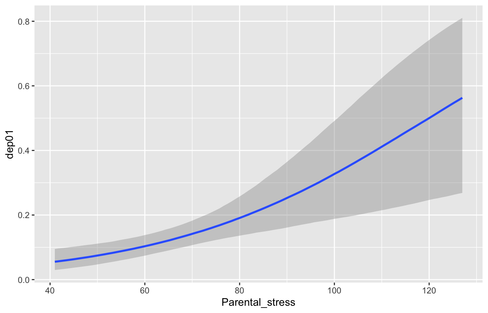
pp_check(fit_teddy, ndraws =30)
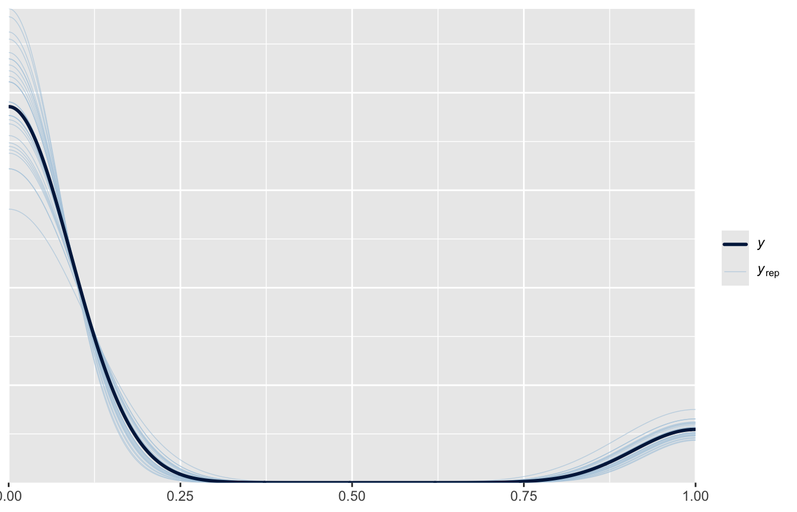
Le stime sono sulla scala dei log-odds (il link logit): non si interpretano direttamente. Il coefficiente dello stress è credibilmente positivo: \(Pr(\beta > 0\,|\,D)\) è praticamente 1.
L’odds ratio dice di quanto si moltiplicano gli odds di depressione per ogni punto di stress in più: qui la mediana è circa 1.04 (+4% di odds per punto, intervallo al 95% da +2% a +6%). conditional_effects() traduce tutto nella scala che interessa davvero: la probabilità di depressione cresce sensibilmente lungo il range dello stress osservato.
I dati simulati da una Bernoulli sono fatti solo di 0 e 1: il density overlay mostra due picchi e serve a poco. Per i GLM esistono predictive check dedicati (es. per proporzioni o per classi): li vedremo nella lezione sui GLM. La logica però non cambia — ed è questo il punto: prior, diagnostiche, posterior, hypothesis(), predictive check funzionano identici qualunque sia la famiglia. Cambia la distribuzione, non la logica bayesiana.
11 Riepilogo finale
Il percorso completo di un’analisi bayesiana:
modello delle osservazioni: quale distribuzione genera i dati? (binomiale, normale, …);
prior: che cosa è plausibile per i parametri prima dei dati? Con che forza?
posterior via teorema di Bayes — analitica nei casi coniugati (Beta-binomiale, normale-normale), via MCMC in tutti gli altri;
diagnostiche: Rhat, n_eff, trace plot (il campionamento ha funzionato?), posterior predictive check (il modello descrive i dati?);
sintesi: stime puntuali, intervalli di credibilità (quantile o HPD), probabilità delle ipotesi di interesse, eventualmente ROPE;
previsione: la distribuzione predittiva per nuovi dati (Sezione 4.6), di cui il predictive check è l’uso diagnostico;
confronto: tra modelli in termini predittivi (LOO) o di evidenza relativa (Bayes Factor);
robustezza: sensitivity analysis sulle prior — obbligatoria con campioni piccoli e ogni volta che si riporta un Bayes Factor.
12 Riferimenti bibliografici
Testi di riferimento:
Gelman, A., Carlin, J. B., Stern, H. S., Dunson, D.B., Vehtari, A., Rubin, D. B. (2014). Bayesian Data Analysis (3rd ed.). Chapman & Hall/CRC.
Hoff, P. D. (2009). A First Course in Bayesian Statistical Methods. Springer.
Kruschke, J. (2015). Doing Bayesian Data Analysis: A Tutorial with R, JAGS, and Stan (2nd ed.). Academic Press.
Lambert, B. (2018). A Student’s Guide to Bayesian Statistics. SAGE.
McElreath, R. (2020). Statistical Rethinking: A Bayesian Course with Examples in R and Stan (2nd ed.). CRC Press.
Lee, M. D., Wagenmakers, E.-J. (2014). Bayesian Cognitive Modeling: A Practical Course. Cambridge University Press.
Articoli:
Cohen, J. (1994). The earth is round (p < .05). American Psychologist, 49, 997–1003.
Etz, A., Vandekerckhove, J. (2018). Introduction to Bayesian inference for psychology. Psychonomic Bulletin & Review, 25, 5–34.
Gigerenzer, G., Krauss, S., Vitouch, O. (2004). The null ritual. In D. Kaplan (Ed.), The Sage Handbook of Quantitative Methodology for the Social Sciences (pp. 391–408). Sage.
Kass, R. E., Raftery, A. E. (1995). Bayes factors. Journal of the American Statistical Association, 90, 773–795.
Keysers, C., Gazzola, V., Wagenmakers, E.-J. (2020). Using Bayes factor hypothesis testing in neuroscience to establish evidence of absence. Nature Neuroscience, 23, 788–799.
Kruschke, J. K., Liddell, T. M. (2018). The Bayesian New Statistics: Hypothesis testing, estimation, meta-analysis, and power analysis from a Bayesian perspective. Psychonomic Bulletin & Review, 25, 178–206.
Rouder, J. N., Speckman, P. L., Sun, D., Morey, R. D., Iverson, G. (2009). Bayesian t tests for accepting and rejecting the null hypothesis. Psychonomic Bulletin & Review, 16, 225–237.
Wagenmakers, E.-J. (2007). A practical solution to the pervasive problems of p values. Psychonomic Bulletin & Review, 14, 779–804.
Wasserstein, R. L., Schirm, A. L., Lazar, N. A. (2019). Moving to a world beyond “p < 0.05”. The American Statistician, 73, 1–19.
In italiano:
Pastore, M., Altoè, G. (2013). Bayes Factor e p-value: così vicini, così lontani. Giornale Italiano di Psicologia, 40, 175–193.
Pacchetti R utilizzati in questa dispensa:
rstanarm (Goodrich et al., 2024) — regressione bayesiana con Stan, modelli precompilati;
bayesplot (Gabry & Mahr, 2024) — grafici per modelli bayesiani (trace plot, aree di credibilità);